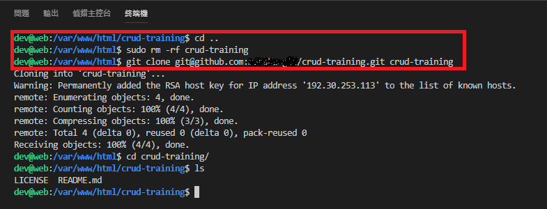
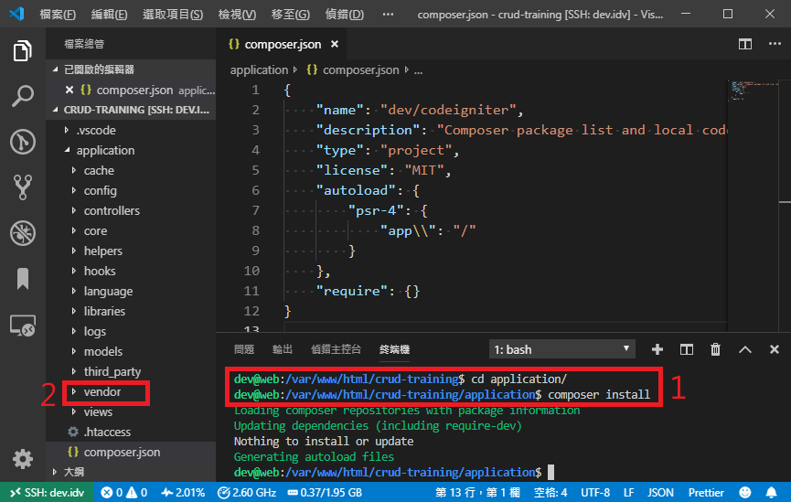

<!DOCTYPE html>
<html>
<head><meta name="generator" content="Hexo 3.8.0">
  <meta charset="utf-8">
  
  <title>CRUD表單設計 Day-02 安裝PHP Framework | Mars&#39;s Blog</title>
  <meta name="viewport" content="width=device-width, initial-scale=1, maximum-scale=1">
  <meta name="description" content="一、說明一個優秀的PHP框架，能幫助我們的程式編寫更合理，更便於維護，框架題供的工具函式，也可以大量簡化我們的開發步驟，而在團隊開發中，框架更提供一個共同的規範讓團隊依循。  在此使用框架 CodeIngiter 3  二、建立Git repository 前往GitHub註冊帳號 建立repository: crud-training  點選右上角頭像旁的＋號，再選「New repository">
<meta name="keywords" content="web,dev,php,training,git,codeingiter">
<meta property="og:type" content="article">
<meta property="og:title" content="CRUD表單設計 Day-02 安裝PHP Framework">
<meta property="og:url" content="https://blog.mars-world.net/2019/08/16/crud-design-02/index.html">
<meta property="og:site_name" content="Mars&#39;s Blog">
<meta property="og:description" content="一、說明一個優秀的PHP框架，能幫助我們的程式編寫更合理，更便於維護，框架題供的工具函式，也可以大量簡化我們的開發步驟，而在團隊開發中，框架更提供一個共同的規範讓團隊依循。  在此使用框架 CodeIngiter 3  二、建立Git repository 前往GitHub註冊帳號 建立repository: crud-training  點選右上角頭像旁的＋號，再選「New repository">
<meta property="og:locale" content="default">
<meta property="og:image" content="https://blog.mars-world.net/2019/08/16/crud-design-02/01-github-create-repo.png">
<meta property="og:image" content="https://blog.mars-world.net/2019/08/16/crud-design-02/01-copy-git-uri.png">
<meta property="og:image" content="https://blog.mars-world.net/2019/08/16/crud-design-02/01-clone-repository.png">
<meta property="og:image" content="https://blog.mars-world.net/2019/08/16/crud-design-02/02-download-codeigniter3.png">
<meta property="og:image" content="https://blog.mars-world.net/2019/08/16/crud-design-02/02-winscp-connect-to-remote.png">
<meta property="og:image" content="https://blog.mars-world.net/2019/08/16/crud-design-02/02-upload-by-winscp.png">
<meta property="og:image" content="https://blog.mars-world.net/2019/08/16/crud-design-02/02-upload-result-1.png">
<meta property="og:image" content="https://blog.mars-world.net/2019/08/16/crud-design-02/02-upload-result-2.png">
<meta property="og:image" content="https://blog.mars-world.net/2019/08/16/crud-design-02/02-create-composer.json.png">
<meta property="og:image" content="https://blog.mars-world.net/2019/08/16/crud-design-02/02-keyin-content-composer.json.png">
<meta property="og:image" content="https://blog.mars-world.net/2019/08/16/crud-design-02/02-composer-initialize.png">
<meta property="og:image" content="https://blog.mars-world.net/2019/08/16/crud-design-02/02-gitignore-edit.png">
<meta property="og:image" content="https://blog.mars-world.net/2019/08/16/crud-design-02/06-create-program.png">
<meta property="og:image" content="https://blog.mars-world.net/2019/08/16/crud-design-02/06-check-result.png">
<meta property="og:image" content="https://blog.mars-world.net/2019/08/16/crud-design-02/07-cteate_datebase.png">
<meta property="og:image" content="https://blog.mars-world.net/2019/08/16/crud-design-02/07-cteate_table-1.png">
<meta property="og:image" content="https://blog.mars-world.net/2019/08/16/crud-design-02/07-cteate_table-2-1.png">
<meta property="og:image" content="https://blog.mars-world.net/2019/08/16/crud-design-02/07-cteate_user-1.png">
<meta property="og:image" content="https://blog.mars-world.net/2019/08/16/crud-design-02/07-cteate_user-2.png">
<meta property="og:image" content="https://blog.mars-world.net/2019/08/16/crud-design-02/07-cteate_user-3.png">
<meta property="og:image" content="https://blog.mars-world.net/2019/08/16/crud-design-02/07-db-setting.png">
<meta property="og:updated_time" content="2020-02-29T16:22:20.743Z">
<meta name="twitter:card" content="summary">
<meta name="twitter:title" content="CRUD表單設計 Day-02 安裝PHP Framework">
<meta name="twitter:description" content="一、說明一個優秀的PHP框架，能幫助我們的程式編寫更合理，更便於維護，框架題供的工具函式，也可以大量簡化我們的開發步驟，而在團隊開發中，框架更提供一個共同的規範讓團隊依循。  在此使用框架 CodeIngiter 3  二、建立Git repository 前往GitHub註冊帳號 建立repository: crud-training  點選右上角頭像旁的＋號，再選「New repository">
<meta name="twitter:image" content="https://blog.mars-world.net/2019/08/16/crud-design-02/01-github-create-repo.png">
  
  
  
    <link href="//fonts.googleapis.com/css?family=Source+Code+Pro" rel="stylesheet" type="text/css">
  

  <link rel="stylesheet" href="https://maxcdn.bootstrapcdn.com/bootstrap/3.3.6/css/bootstrap.min.css" integrity="sha384-1q8mTJOASx8j1Au+a5WDVnPi2lkFfwwEAa8hDDdjZlpLegxhjVME1fgjWPGmkzs7" crossorigin="anonymous">

  <link rel="stylesheet" href="https://maxcdn.bootstrapcdn.com/font-awesome/4.5.0/css/font-awesome.min.css" integrity="sha384-XdYbMnZ/QjLh6iI4ogqCTaIjrFk87ip+ekIjefZch0Y+PvJ8CDYtEs1ipDmPorQ+" crossorigin="anonymous">

  <link rel="stylesheet" href="/css/styles.css">
  

</head>
</html>
<body>
  <nav class="navbar navbar-inverse">
  <div class="container">
    <!-- Brand and toggle get grouped for better mobile display -->
    <div class="navbar-header">
      <button type="button" class="navbar-toggle collapsed" data-toggle="collapse" data-target="#main-menu-navbar" aria-expanded="false">
        <span class="sr-only">Toggle navigation</span>
        <span class="icon-bar"></span>
        <span class="icon-bar"></span>
        <span class="icon-bar"></span>
      </button>
      
    </div>

    <!-- Collect the nav links, forms, and other content for toggling -->
    <div class="collapse navbar-collapse" id="main-menu-navbar">
      <ul class="nav navbar-nav">
        
          <li><a class href="/index.html">Home</a></li>
        
          <li><a class href="/archives/">Archives</a></li>
        
          <li><a class href="https://github.com/marshung24">GitHub</a></li>
        
      </ul>

      <!--
      <ul class="nav navbar-nav navbar-right">
        
      </ul>
      -->
    </div><!-- /.navbar-collapse -->
  </div><!-- /.container-fluid -->
</nav>

  <div class="container">
    <div class="blog-header">
  <h1 class="blog-title">Mars&#39;s Blog</h1>
  
    <p class="lead blog-description">Mars&#39;s learning record</p>
  
</div>

    <div class="row">
        <div class="col-sm-8 blog-main">
          <article id="post-crud-design-02" class="article article-type-post" itemscope itemprop="blogPost">

  <header class="article-header">
    
  
    <h1 class="article-title" itemprop="name">
      CRUD表單設計 Day-02 安裝PHP Framework
    </h1>
  


  </header>

  <div class="article-meta">
    <div class="article-datetime">
  <a href="/2019/08/16/crud-design-02/" class="article-date"><time datetime="2019-08-16T13:17:34.000Z" itemprop="datePublished">2019-08-16</time></a>
</div>

    <div class="article-author">Mars Hung</div>
    
  <div class="article-category">
    <a class="article-category-link" href="/categories/training/">training</a>
  </div>


    <div class="article-reading">
  
  <span id="busuanzi_container_page_pv">文章閱讀量<span id="busuanzi_value_page_pv"></span>次</span>
  
</div>

  </div>
  <div class="article-inner">

    <div class="article-entry" itemprop="articleBody">
      
        
<div id="toc">
    <ol class="toc"><li class="toc-item toc-level-1"><a class="toc-link" href="#一、說明"><span class="toc-text">一、說明</span></a></li><li class="toc-item toc-level-1"><a class="toc-link" href="#二、建立Git-repository"><span class="toc-text">二、建立Git repository</span></a></li><li class="toc-item toc-level-1"><a class="toc-link" href="#三、安裝-CodeIngiter-3"><span class="toc-text">三、安裝 CodeIngiter 3</span></a><ol class="toc-child"><li class="toc-item toc-level-2"><a class="toc-link" href="#3-1-下載CodeIngiter-3"><span class="toc-text">3.1 下載CodeIngiter 3</span></a></li><li class="toc-item toc-level-2"><a class="toc-link" href="#3-2-解壓縮並上傳至遠端開發目錄"><span class="toc-text">3.2 解壓縮並上傳至遠端開發目錄</span></a></li><li class="toc-item toc-level-2"><a class="toc-link" href="#3-3-推送至Git"><span class="toc-text">3.3 推送至Git</span></a></li></ol></li><li class="toc-item toc-level-1"><a class="toc-link" href="#四、設定-CodeIngiter-3"><span class="toc-text">四、設定 CodeIngiter 3</span></a><ol class="toc-child"><li class="toc-item toc-level-2"><a class="toc-link" href="#4-1-建立Composer資料-amp-目錄"><span class="toc-text">4.1 建立Composer資料&amp;目錄</span></a></li><li class="toc-item toc-level-2"><a class="toc-link" href="#4-2-修改composer設定值"><span class="toc-text">4.2 修改composer設定值</span></a></li><li class="toc-item toc-level-2"><a class="toc-link" href="#4-3-編輯-gitignore-忽略git處理清單"><span class="toc-text">4.3 編輯.gitignore(忽略git處理清單)</span></a></li><li class="toc-item toc-level-2"><a class="toc-link" href="#4-4-上傳Git"><span class="toc-text">4.4 上傳Git</span></a></li></ol></li><li class="toc-item toc-level-1"><a class="toc-link" href="#五、目錄結構"><span class="toc-text">五、目錄結構</span></a></li><li class="toc-item toc-level-1"><a class="toc-link" href="#六、第一支程式-Hello-World"><span class="toc-text">六、第一支程式 Hello World!</span></a><ol class="toc-child"><li class="toc-item toc-level-2"><a class="toc-link" href="#6-1-建立Controller"><span class="toc-text">6.1 建立Controller</span></a></li><li class="toc-item toc-level-2"><a class="toc-link" href="#6-2-建立View"><span class="toc-text">6.2 建立View</span></a></li><li class="toc-item toc-level-2"><a class="toc-link" href="#6-3-查看結果"><span class="toc-text">6.3 查看結果</span></a></li><li class="toc-item toc-level-2"><a class="toc-link" href="#6-4-推送至Git"><span class="toc-text">6.4 推送至Git</span></a></li></ol></li><li class="toc-item toc-level-1"><a class="toc-link" href="#七、資料庫存取"><span class="toc-text">七、資料庫存取</span></a><ol class="toc-child"><li class="toc-item toc-level-2"><a class="toc-link" href="#7-1-資料設計"><span class="toc-text">7.1 資料設計</span></a><ol class="toc-child"><li class="toc-item toc-level-3"><a class="toc-link" href="#7-1-1-建構原則"><span class="toc-text">7.1.1 建構原則</span></a></li><li class="toc-item toc-level-3"><a class="toc-link" href="#7-1-2-常用格式"><span class="toc-text">7.1.2 常用格式</span></a><ol class="toc-child"><li class="toc-item toc-level-4"><a class="toc-link" href="#數字型態"><span class="toc-text">數字型態</span></a></li><li class="toc-item toc-level-4"><a class="toc-link" href="#字串型態"><span class="toc-text">字串型態</span></a></li><li class="toc-item toc-level-4"><a class="toc-link" href="#時間型態"><span class="toc-text">時間型態</span></a></li><li class="toc-item toc-level-4"><a class="toc-link" href="#列舉型態"><span class="toc-text">列舉型態</span></a></li></ol></li><li class="toc-item toc-level-3"><a class="toc-link" href="#7-1-3-需求假設"><span class="toc-text">7.1.3 需求假設</span></a></li><li class="toc-item toc-level-3"><a class="toc-link" href="#7-1-4-需求設計"><span class="toc-text">7.1.4 需求設計</span></a></li></ol></li><li class="toc-item toc-level-2"><a class="toc-link" href="#7-2-資料庫建構"><span class="toc-text">7.2 資料庫建構</span></a><ol class="toc-child"><li class="toc-item toc-level-3"><a class="toc-link" href="#7-2-1-phpmyadmin管理"><span class="toc-text">7.2.1 phpmyadmin管理</span></a></li><li class="toc-item toc-level-3"><a class="toc-link" href="#7-2-2-建立資料庫"><span class="toc-text">7.2.2 建立資料庫</span></a></li><li class="toc-item toc-level-3"><a class="toc-link" href="#7-2-3-建立資料表"><span class="toc-text">7.2.3 建立資料表</span></a><ol class="toc-child"><li class="toc-item toc-level-4"><a class="toc-link" href="#方法一"><span class="toc-text">方法一</span></a></li><li class="toc-item toc-level-4"><a class="toc-link" href="#方法二"><span class="toc-text">方法二</span></a></li></ol></li><li class="toc-item toc-level-3"><a class="toc-link" href="#7-2-4-建立存取帳號"><span class="toc-text">7.2.4 建立存取帳號</span></a></li></ol></li><li class="toc-item toc-level-2"><a class="toc-link" href="#7-3-設定資料庫連線"><span class="toc-text">7.3 設定資料庫連線</span></a></li><li class="toc-item toc-level-2"><a class="toc-link" href="#7-4-Model建構範例"><span class="toc-text">7.4 Model建構範例</span></a></li><li class="toc-item toc-level-2"><a class="toc-link" href="#7-5-Model使用範例"><span class="toc-text">7.5 Model使用範例</span></a></li><li class="toc-item toc-level-2"><a class="toc-link" href="#7-6-觀察資料庫存取狀況"><span class="toc-text">7.6 觀察資料庫存取狀況</span></a></li></ol></li><li class="toc-item toc-level-1"><a class="toc-link" href="#八、參考"><span class="toc-text">八、參考</span></a></li><li class="toc-item toc-level-1"><a class="toc-link" href="#九、作業"><span class="toc-text">九、作業</span></a></li></ol>
</div>

        <h1 id="一、說明"><a href="#一、說明" class="headerlink" title="一、說明"></a>一、說明</h1><p>一個優秀的PHP框架，能幫助我們的程式編寫更合理，更便於維護，框架題供的工具函式，也可以大量簡化我們的開發步驟，而在團隊開發中，框架更提供一個共同的規範讓團隊依循。</p>
<blockquote>
<p>在此使用框架 CodeIngiter 3</p>
</blockquote>
<h1 id="二、建立Git-repository"><a href="#二、建立Git-repository" class="headerlink" title="二、建立Git repository"></a>二、建立Git repository</h1><ul>
<li>前往<a href="https://github.com" target="_blank" rel="noopener">GitHub</a>註冊帳號</li>
<li><p>建立repository: crud-training</p>
<ul>
<li>點選右上角頭像旁的＋號，再選「New repository」</li>
<li><p>填寫資料</p>
<p></p>
</li>
</ul>
</li>
<li><p>取得 crud-training 的 Git Repo RUL</p>
<ul>
<li>點選Clone or download</li>
<li>使用SSH URL並複製<br></li>
</ul>
</li>
<li><p>Clone crud-training</p>
<figure class="highlight shell"><table><tr><td class="gutter"><pre><span class="line">1</span><br><span class="line">2</span><br><span class="line">3</span><br><span class="line">4</span><br><span class="line">5</span><br><span class="line">6</span><br><span class="line">7</span><br></pre></td><td class="code"><pre><span class="line"><span class="meta">#</span><span class="bash"> 刪除原本的crud-training資料夾</span></span><br><span class="line"><span class="meta">$</span><span class="bash"> <span class="built_in">cd</span> /var/www/html</span></span><br><span class="line"><span class="meta">$</span><span class="bash"> sudo rm -rf crud-training</span></span><br><span class="line"><span class="meta">#</span><span class="bash"> Clone git repo 至 crud-training資料夾</span></span><br><span class="line"><span class="meta">$</span><span class="bash"> git <span class="built_in">clone</span> &#123;Git Repo RUL&#125; crud-training</span></span><br><span class="line"><span class="meta">#</span><span class="bash"> 回到crud-training</span></span><br><span class="line"><span class="meta">$</span><span class="bash"> <span class="built_in">cd</span> crud-training</span></span><br></pre></td></tr></table></figure>
<blockquote>
<p>將<strong>{Git Repo RUL}</strong>替換成剛剛複製的Git Repo RUL</p>
</blockquote>
<p></p>
<blockquote>
<p>註：如果Linux與Github間的金鑰認証沒有做好，會clone失敗，請參考<a href="/2019/07/24/account-security-setting/">帳號安全設定-GitHub</a></p>
</blockquote>
</li>
</ul>
<h1 id="三、安裝-CodeIngiter-3"><a href="#三、安裝-CodeIngiter-3" class="headerlink" title="三、安裝 CodeIngiter 3"></a>三、安裝 CodeIngiter 3</h1><h2 id="3-1-下載CodeIngiter-3"><a href="#3-1-下載CodeIngiter-3" class="headerlink" title="3.1 下載CodeIngiter 3"></a>3.1 下載<a href="https://www.codeigniter.com" target="_blank" rel="noopener">CodeIngiter 3</a></h2><p>前往 CodeIngiter 3 官網，下載檔案<br></p>
<h2 id="3-2-解壓縮並上傳至遠端開發目錄"><a href="#3-2-解壓縮並上傳至遠端開發目錄" class="headerlink" title="3.2 解壓縮並上傳至遠端開發目錄"></a>3.2 解壓縮並上傳至遠端開發目錄</h2><ul>
<li><p>下載並安裝<a href="https://winscp.net/eng/docs/lang:cht" target="_blank" rel="noopener">WinSCP</a></p>
</li>
<li><p>連線至遠端目錄</p>
<p></p>
</li>
<li><p>上傳檔案</p>
<p></p>
<blockquote>
<p>沒用的檔案可以不傳</p>
</blockquote>
</li>
<li><p>查看上傳結果-從VSCode</p>
<p></p>
</li>
<li><p>查看上傳結果-從瀏覽器</p>
<p>前往網址：<a href="https://crud-training.dev.idv/" target="_blank" rel="noopener">https://crud-training.dev.idv/</a></p>
<p></p>
</li>
</ul>
<h2 id="3-3-推送至Git"><a href="#3-3-推送至Git" class="headerlink" title="3.3 推送至Git"></a>3.3 推送至Git</h2><ul>
<li><p>查看目前git log</p>
<figure class="highlight shell"><table><tr><td class="gutter"><pre><span class="line">1</span><br></pre></td><td class="code"><pre><span class="line"><span class="meta">$</span><span class="bash"> git <span class="built_in">log</span></span></span><br></pre></td></tr></table></figure>
</li>
<li><p>查看變動的檔案</p>
<figure class="highlight shell"><table><tr><td class="gutter"><pre><span class="line">1</span><br></pre></td><td class="code"><pre><span class="line"><span class="meta">$</span><span class="bash"> git status</span></span><br></pre></td></tr></table></figure>
</li>
<li><p>暫存”所有”變動檔案</p>
<figure class="highlight shell"><table><tr><td class="gutter"><pre><span class="line">1</span><br></pre></td><td class="code"><pre><span class="line"><span class="meta">$</span><span class="bash"> git add .</span></span><br></pre></td></tr></table></figure>
</li>
<li><p>再查看變動的檔案</p>
<figure class="highlight shell"><table><tr><td class="gutter"><pre><span class="line">1</span><br></pre></td><td class="code"><pre><span class="line"><span class="meta">$</span><span class="bash"> git status</span></span><br></pre></td></tr></table></figure>
</li>
<li><p>Commit 暫存檔案</p>
<figure class="highlight shell"><table><tr><td class="gutter"><pre><span class="line">1</span><br><span class="line">2</span><br><span class="line">3</span><br></pre></td><td class="code"><pre><span class="line"><span class="meta">$</span><span class="bash"> git commit</span></span><br><span class="line"><span class="meta">#</span><span class="bash"> 在第一行輸入： [Upload] Upload CodeIgniter 3</span></span><br><span class="line"><span class="meta">#</span><span class="bash"> 儲存離開</span></span><br></pre></td></tr></table></figure>
<blockquote>
<ul>
<li>用#開頭的行不會被git處理，是給使用者看的</li>
</ul>
</blockquote>
</li>
<li><p>推送至Git</p>
<figure class="highlight shell"><table><tr><td class="gutter"><pre><span class="line">1</span><br></pre></td><td class="code"><pre><span class="line"><span class="meta">$</span><span class="bash"> git push</span></span><br></pre></td></tr></table></figure>
</li>
<li><p>再查看目前git log</p>
<figure class="highlight shell"><table><tr><td class="gutter"><pre><span class="line">1</span><br></pre></td><td class="code"><pre><span class="line"><span class="meta">$</span><span class="bash"> git <span class="built_in">log</span></span></span><br></pre></td></tr></table></figure>
</li>
<li><p>去Github查看上傳結果</p>
</li>
</ul>
<h1 id="四、設定-CodeIngiter-3"><a href="#四、設定-CodeIngiter-3" class="headerlink" title="四、設定 CodeIngiter 3"></a>四、設定 CodeIngiter 3</h1><h2 id="4-1-建立Composer資料-amp-目錄"><a href="#4-1-建立Composer資料-amp-目錄" class="headerlink" title="4.1 建立Composer資料&amp;目錄"></a>4.1 建立Composer資料&amp;目錄</h2><ul>
<li><p>在application目錄下建立檔案composer.json (按右鍵=&gt;新增檔案)</p>
<p></p>
</li>
<li><p>填入composer.json檔案內容</p>
<figure class="highlight javascript"><table><tr><td class="gutter"><pre><span class="line">1</span><br><span class="line">2</span><br><span class="line">3</span><br><span class="line">4</span><br><span class="line">5</span><br><span class="line">6</span><br><span class="line">7</span><br><span class="line">8</span><br><span class="line">9</span><br><span class="line">10</span><br><span class="line">11</span><br><span class="line">12</span><br></pre></td><td class="code"><pre><span class="line">&#123;</span><br><span class="line">    <span class="string">"name"</span>: <span class="string">"dev/codeigniter"</span>,</span><br><span class="line">    <span class="string">"description"</span>: <span class="string">"Composer package list and local code autoload support."</span>,</span><br><span class="line">    <span class="string">"type"</span>: <span class="string">"project"</span>,</span><br><span class="line">    <span class="string">"license"</span>: <span class="string">"MIT"</span>,</span><br><span class="line">    <span class="string">"autoload"</span>: &#123;</span><br><span class="line">        <span class="string">"psr-4"</span>: &#123;</span><br><span class="line">            <span class="string">"app\\"</span>: <span class="string">"./"</span></span><br><span class="line">        &#125;</span><br><span class="line">    &#125;,</span><br><span class="line">    <span class="string">"require"</span>: &#123;&#125;</span><br><span class="line">&#125;</span><br></pre></td></tr></table></figure>
<p></p>
</li>
<li><p>安裝composer相關資料</p>
<figure class="highlight shell"><table><tr><td class="gutter"><pre><span class="line">1</span><br><span class="line">2</span><br></pre></td><td class="code"><pre><span class="line"><span class="meta">$</span><span class="bash"> <span class="built_in">cd</span> application</span></span><br><span class="line"><span class="meta">$</span><span class="bash"> composer install</span></span><br></pre></td></tr></table></figure>
<blockquote>
<p>安裝完成後，application下會出現vendor目錄<br></p>
</blockquote>
</li>
</ul>
<h2 id="4-2-修改composer設定值"><a href="#4-2-修改composer設定值" class="headerlink" title="4.2 修改composer設定值"></a>4.2 修改composer設定值</h2><ul>
<li>開啟檔案 application/config/config.php</li>
<li>修改 $config[‘composer_autoload’] = TRUE; (FALSE =&gt; TRUE)</li>
</ul>
<h2 id="4-3-編輯-gitignore-忽略git處理清單"><a href="#4-3-編輯-gitignore-忽略git處理清單" class="headerlink" title="4.3 編輯.gitignore(忽略git處理清單)"></a>4.3 編輯.gitignore(忽略git處理清單)</h2><figure class="highlight plain"><table><tr><td class="gutter"><pre><span class="line">1</span><br><span class="line">2</span><br><span class="line">3</span><br><span class="line">4</span><br><span class="line">5</span><br></pre></td><td class="code"><pre><span class="line">application/cache/*</span><br><span class="line">application/logs/*</span><br><span class="line">composer.lock</span><br><span class="line">/vendor/</span><br><span class="line">application/vendor</span><br></pre></td></tr></table></figure>
<p></p>
<h2 id="4-4-上傳Git"><a href="#4-4-上傳Git" class="headerlink" title="4.4 上傳Git"></a>4.4 上傳Git</h2><figure class="highlight shell"><table><tr><td class="gutter"><pre><span class="line">1</span><br><span class="line">2</span><br><span class="line">3</span><br><span class="line">4</span><br><span class="line">5</span><br><span class="line">6</span><br><span class="line">7</span><br><span class="line">8</span><br></pre></td><td class="code"><pre><span class="line"><span class="meta">#</span><span class="bash"> 查看變動</span></span><br><span class="line"><span class="meta">$</span><span class="bash"> git status</span></span><br><span class="line"><span class="meta">#</span><span class="bash"> 暫存所有變動</span></span><br><span class="line"><span class="meta">$</span><span class="bash"> git add .</span></span><br><span class="line"><span class="meta">#</span><span class="bash"> commit 變動檔案</span></span><br><span class="line"><span class="meta">$</span><span class="bash"> git commit</span></span><br><span class="line"><span class="meta">#</span><span class="bash"> 推送</span></span><br><span class="line"><span class="meta">$</span><span class="bash"> git push</span></span><br></pre></td></tr></table></figure>
<h1 id="五、目錄結構"><a href="#五、目錄結構" class="headerlink" title="五、目錄結構"></a>五、目錄結構</h1><figure class="highlight plain"><table><tr><td class="gutter"><pre><span class="line">1</span><br><span class="line">2</span><br><span class="line">3</span><br><span class="line">4</span><br><span class="line">5</span><br><span class="line">6</span><br><span class="line">7</span><br><span class="line">8</span><br><span class="line">9</span><br><span class="line">10</span><br><span class="line">11</span><br><span class="line">12</span><br><span class="line">13</span><br><span class="line">14</span><br><span class="line">15</span><br><span class="line">16</span><br><span class="line">17</span><br><span class="line">18</span><br><span class="line">19</span><br><span class="line">20</span><br><span class="line">21</span><br><span class="line">22</span><br><span class="line">23</span><br><span class="line">24</span><br><span class="line">25</span><br><span class="line">26</span><br><span class="line">27</span><br><span class="line">28</span><br><span class="line">29</span><br><span class="line">30</span><br><span class="line">31</span><br><span class="line">32</span><br><span class="line">33</span><br><span class="line">34</span><br><span class="line">35</span><br><span class="line">36</span><br><span class="line">37</span><br><span class="line">38</span><br><span class="line">39</span><br><span class="line">40</span><br><span class="line">41</span><br><span class="line">42</span><br><span class="line">43</span><br><span class="line">44</span><br><span class="line">45</span><br><span class="line">46</span><br><span class="line">47</span><br><span class="line">48</span><br><span class="line">49</span><br></pre></td><td class="code"><pre><span class="line">|-- application 項目目錄</span><br><span class="line">    |-- core 項目的核心程序</span><br><span class="line">    |-- helpers 項目的輔助函數</span><br><span class="line">    |-- libraries 通用類庫</span><br><span class="line">    |-- language 語言包</span><br><span class="line">    |-- config 項目相關的配置</span><br><span class="line">        |-- config.php 項目相關的配置文件</span><br><span class="line">        |-- database.php 數據庫相關的配置文件</span><br><span class="line">        |-- autoload.php 設置自動加載類庫的配置文件</span><br><span class="line">        |-- constants.php 常量配置文件</span><br><span class="line">        |-- routes.php 路由配置文件</span><br><span class="line">    |-- controllers 控制器目錄</span><br><span class="line">        |-- welcome.php 控制器文件，繼承CI_Controller</span><br><span class="line">    |-- models 模型目錄</span><br><span class="line">        |-- welcome_model.php 模型文件，繼承CI_Model</span><br><span class="line">    |-- views 視圖目錄</span><br><span class="line">        |-- welcome.php 視圖模板文件，默認後綴名為.php</span><br><span class="line">    |-- cache 存放數據或模板的緩存文件</span><br><span class="line">    |-- errors 錯誤提示模板</span><br><span class="line">    |-- hooks 鉤子，在不修改系統核心文件的基礎上擴展系統功能</span><br><span class="line">    |-- third_party 第三方庫</span><br><span class="line">    |-- logs 日誌</span><br><span class="line"></span><br><span class="line">|-- system 框架程序目錄</span><br><span class="line">    |-- core 框架的核心程序</span><br><span class="line">        |-- CodeIgniter.php 引導性文件</span><br><span class="line">        |-- Common.php 加載基類庫的公共函數</span><br><span class="line">        |-- Controller.php 基控制器類文件：CI_Controller</span><br><span class="line">        |-- Model.php 基模型類文件：CI_Model</span><br><span class="line">        |-- Config.php 配置類文件：CI_Config</span><br><span class="line">        |-- Input.php 輸入類文件：CI_Input</span><br><span class="line">        |-- Output.php 輸出類文件：CI_Output</span><br><span class="line">        |-- URL.php URL類文件：CI_URl</span><br><span class="line">        |-- Router.php 路由類文件：CI_Router</span><br><span class="line">        |-- Loader.php 加載類文件：CI_Loader</span><br><span class="line">    |-- helpers 輔助函數</span><br><span class="line">        |-- url_helper.php url相關的輔助函數，如：創建url的輔助函數</span><br><span class="line">        |-- captcha_helper.php創建圖形驗證碼的輔助函數</span><br><span class="line">    |-- libraries 通用類庫</span><br><span class="line">        |-- Pagination.php 通用分頁類庫</span><br><span class="line">        |-- Upload.php 通用文件上傳類庫</span><br><span class="line">        |-- Image_lib.php 通用圖像處理類庫</span><br><span class="line">        |-- Session.php 通用session類庫</span><br><span class="line">    |-- language 語言包</span><br><span class="line">    |-- database 數據庫操作相關的程序</span><br><span class="line">        |-- DB_active_rec.php 快捷操作類文件(ActiveRecord)</span><br><span class="line">    |-- fonts 字庫</span><br><span class="line"></span><br><span class="line">|-- index.php 入口文件</span><br></pre></td></tr></table></figure>
<blockquote>
<p>system目錄下的資料不建議變動</p>
</blockquote>
<h1 id="六、第一支程式-Hello-World"><a href="#六、第一支程式-Hello-World" class="headerlink" title="六、第一支程式 Hello World!"></a>六、第一支程式 Hello World!</h1><h2 id="6-1-建立Controller"><a href="#6-1-建立Controller" class="headerlink" title="6.1 建立Controller"></a>6.1 建立Controller</h2><ul>
<li><p>建立檔案<br>application/controllers/Hello.php</p>
</li>
<li><p>寫入內容</p>
<figure class="highlight php"><table><tr><td class="gutter"><pre><span class="line">1</span><br><span class="line">2</span><br><span class="line">3</span><br><span class="line">4</span><br><span class="line">5</span><br><span class="line">6</span><br><span class="line">7</span><br><span class="line">8</span><br><span class="line">9</span><br><span class="line">10</span><br></pre></td><td class="code"><pre><span class="line"><span class="meta">&lt;?php</span></span><br><span class="line">defined(<span class="string">'BASEPATH'</span>) <span class="keyword">OR</span> <span class="keyword">exit</span>(<span class="string">'No direct script access allowed'</span>);</span><br><span class="line"></span><br><span class="line"><span class="class"><span class="keyword">class</span> <span class="title">Hello</span> <span class="keyword">extends</span> <span class="title">CI_Controller</span> </span>&#123;</span><br><span class="line"></span><br><span class="line">    <span class="keyword">public</span> <span class="function"><span class="keyword">function</span> <span class="title">index</span><span class="params">()</span></span></span><br><span class="line"><span class="function">    </span>&#123;</span><br><span class="line">        <span class="keyword">$this</span>-&gt;load-&gt;view(<span class="string">'hello'</span>);</span><br><span class="line">    &#125;</span><br><span class="line">&#125;</span><br></pre></td></tr></table></figure>
<blockquote>
<ul>
<li>Controller檔名第一個字母大寫，class名子和檔名一樣</li>
<li>Load view時，只需填寫view的檔名</li>
</ul>
</blockquote>
<p></p>
</li>
</ul>
<h2 id="6-2-建立View"><a href="#6-2-建立View" class="headerlink" title="6.2 建立View"></a>6.2 建立View</h2><ul>
<li><p>建立檔案<br>application/views/hello.php</p>
</li>
<li><p>寫入內容</p>
<figure class="highlight php"><table><tr><td class="gutter"><pre><span class="line">1</span><br><span class="line">2</span><br><span class="line">3</span><br><span class="line">4</span><br><span class="line">5</span><br><span class="line">6</span><br><span class="line">7</span><br><span class="line">8</span><br><span class="line">9</span><br><span class="line">10</span><br><span class="line">11</span><br><span class="line">12</span><br><span class="line">13</span><br><span class="line">14</span><br><span class="line">15</span><br><span class="line">16</span><br><span class="line">17</span><br><span class="line">18</span><br><span class="line">19</span><br><span class="line">20</span><br><span class="line">21</span><br></pre></td><td class="code"><pre><span class="line"><span class="meta">&lt;?php</span></span><br><span class="line">defined(<span class="string">'BASEPATH'</span>) <span class="keyword">or</span> <span class="keyword">exit</span>(<span class="string">'No direct script access allowed'</span>);</span><br><span class="line"><span class="meta">?&gt;</span></span><br><span class="line">&lt;!DOCTYPE html&gt;</span><br><span class="line">&lt;html lang=<span class="string">"en"</span>&gt;</span><br><span class="line"></span><br><span class="line">&lt;head&gt;</span><br><span class="line">	&lt;meta charset=<span class="string">"utf-8"</span>&gt;</span><br><span class="line">	&lt;title&gt;Hello World!&lt;/title&gt;</span><br><span class="line">&lt;/head&gt;</span><br><span class="line"></span><br><span class="line">&lt;body&gt;</span><br><span class="line"></span><br><span class="line">	&lt;div&gt;</span><br><span class="line">		&lt;h1&gt;Hello World!&lt;/h1&gt;</span><br><span class="line">		&lt;p&gt;This is some text.&lt;/p&gt;</span><br><span class="line">	&lt;/div&gt;</span><br><span class="line"></span><br><span class="line">&lt;/body&gt;</span><br><span class="line"></span><br><span class="line">&lt;/html&gt;</span><br></pre></td></tr></table></figure>
<blockquote>
<p>View檔名小寫即可</p>
</blockquote>
</li>
</ul>
<h2 id="6-3-查看結果"><a href="#6-3-查看結果" class="headerlink" title="6.3 查看結果"></a>6.3 查看結果</h2><ul>
<li><p>打開網址<a href="https://crud-training.dev.idv/hello" target="_blank" rel="noopener">https://crud-training.dev.idv/hello</a></p>
<p></p>
<blockquote>
<p>上面的hello，是controller名稱Hello字首轉小寫而來 (只有字首會轉小寫)</p>
</blockquote>
</li>
</ul>
<h2 id="6-4-推送至Git"><a href="#6-4-推送至Git" class="headerlink" title="6.4 推送至Git"></a>6.4 推送至Git</h2><figure class="highlight shell"><table><tr><td class="gutter"><pre><span class="line">1</span><br><span class="line">2</span><br><span class="line">3</span><br><span class="line">4</span><br><span class="line">5</span><br><span class="line">6</span><br><span class="line">7</span><br><span class="line">8</span><br></pre></td><td class="code"><pre><span class="line"><span class="meta">#</span><span class="bash"> 查看變動</span></span><br><span class="line"><span class="meta">$</span><span class="bash"> git status</span></span><br><span class="line"><span class="meta">#</span><span class="bash"> 暫存所有變動</span></span><br><span class="line"><span class="meta">$</span><span class="bash"> git add .</span></span><br><span class="line"><span class="meta">#</span><span class="bash"> commit 變動檔案</span></span><br><span class="line"><span class="meta">$</span><span class="bash"> git commit</span></span><br><span class="line"><span class="meta">#</span><span class="bash"> 推送</span></span><br><span class="line"><span class="meta">$</span><span class="bash"> git push</span></span><br></pre></td></tr></table></figure>
<h1 id="七、資料庫存取"><a href="#七、資料庫存取" class="headerlink" title="七、資料庫存取"></a>七、資料庫存取</h1><p>本教學中選用MySQL資料庫</p>
<h2 id="7-1-資料設計"><a href="#7-1-資料設計" class="headerlink" title="7.1 資料設計"></a>7.1 資料設計</h2><p>使用者在網頁前端輸入的資料，傳送到後端處理完後，必需存到資料庫中，以待後續取用。但資料要如何存取才符合需求並有好的效率，資料庫設計至關重要。</p>
<h3 id="7-1-1-建構原則"><a href="#7-1-1-建構原則" class="headerlink" title="7.1.1 建構原則"></a>7.1.1 建構原則</h3><ul>
<li>編碼使用 utf8_unicode_ci<ul>
<li>如果資料欄位可能為中英夾雜，使用utf8_unicode_ci</li>
<li>如果可以確定欄位為純ASCII可用ascii_bin (進階)</li>
</ul>
</li>
<li>使用小寫英文命名，單字用底線分隔  <ul>
<li>不使用大寫及其他符號</li>
</ul>
</li>
<li>資料表名稱不宜太長，以 4 個字以下為原則<ul>
<li>字元過多可用縮寫代稱</li>
</ul>
</li>
<li>欄位名稱不宜太長，以4個字以下為原則<ul>
<li>字元過多可用縮寫代稱</li>
</ul>
</li>
<li>資料表及欄位需有備註</li>
<li>每個資料表需有主鍵、索引鍵<ul>
<li>建議擁有auto_increment型態的主鍵，以便使用where in精確查詢</li>
</ul>
</li>
<li>資料表建議有資料識別欄位<ul>
<li>建立日、建立者、更新日、更新者、軟刪日、軟刪者、資料狀態</li>
</ul>
</li>
</ul>
<h3 id="7-1-2-常用格式"><a href="#7-1-2-常用格式" class="headerlink" title="7.1.2 常用格式"></a>7.1.2 常用格式</h3><h4 id="數字型態"><a href="#數字型態" class="headerlink" title="數字型態"></a>數字型態</h4><ul>
<li>TINYINT[(M)] : 1 byte<ul>
<li>Signed: -128 to 127 (-27 to 27-1)</li>
<li>Unsigned: 0 to 255 (0 to 28-1)</li>
</ul>
</li>
<li>INT[(M)] : 4 byte<ul>
<li>Signed: -2147483648 to 2147483647 (-231 to 231-1)</li>
<li>Unsigned: 0 to 4294967295 (0 to 232-1)</li>
</ul>
</li>
<li>BIGINT[(M)] : 8 byte<ul>
<li>Signed: -9223372036854775808 to 9223372036854775807 (-263 to 263-1)</li>
<li>Unsigned: 0 to 18446744073709551615 (0 to 264-1)</li>
</ul>
</li>
<li>DECIMAL[(M[,D])] : M+2 byte<ul>
<li>依 M 與 D 值而定</li>
<li>M是數字的最大數(精度)</li>
<li>D是小數點右側數字的數目(標度)</li>
<li>decimal(5,2) 為 xxx.xx</li>
</ul>
</li>
</ul>
<blockquote>
<p>上表中的 M 代表「最大顯示寬度」</p>
</blockquote>
<h4 id="字串型態"><a href="#字串型態" class="headerlink" title="字串型態"></a>字串型態</h4><ul>
<li>VARCHAR(M) : L+1 bytes<ul>
<li>最大長度 M bytes</li>
</ul>
</li>
<li>TEXT : L+2 bytes<ul>
<li>最大長度 2^16-1 bytes</li>
</ul>
</li>
<li>MEDIUMTEXT : L+3 bytes<ul>
<li>最大長度 2^24-1 bytes</li>
</ul>
</li>
<li>LONGTEXT  : L+4 bytes<ul>
<li>最大長度 2^32-1 bytes</li>
</ul>
</li>
</ul>
<blockquote>
<p>上表中的 L 代表「實際儲存的空間大小」</p>
</blockquote>
<h4 id="時間型態"><a href="#時間型態" class="headerlink" title="時間型態"></a>時間型態</h4><ul>
<li>DATE : 3 bytes<ul>
<li>‘0000-01-01’ to ‘9999-12-31’</li>
</ul>
</li>
<li>TIME : 3 bytes<ul>
<li>‘-838:59:59’ to ‘838:59:59’</li>
</ul>
</li>
<li>DATETIME : 8 bytes<ul>
<li>‘1000-01-01 00:00:00’ to ‘9999-12-31 23:59:59’</li>
</ul>
</li>
<li>TIMESTAMP : 4 bytes<ul>
<li>自 1970 年起，至 2037 年的某時</li>
</ul>
</li>
</ul>
<h4 id="列舉型態"><a href="#列舉型態" class="headerlink" title="列舉型態"></a>列舉型態</h4><ul>
<li>ENUM : 1 or 2 bytes<ul>
<li>65535 個成員</li>
</ul>
</li>
</ul>
<h3 id="7-1-3-需求假設"><a href="#7-1-3-需求假設" class="headerlink" title="7.1.3 需求假設"></a>7.1.3 需求假設</h3><p>有一部門管理介面，需要可填寫 部門代碼、部門名稱、部門層級、開始時間、結束時間、備註 ，其中部門代碼維一</p>
<p>欄位整理：</p>
<ul>
<li>系統序號</li>
<li>代碼</li>
<li>名稱</li>
<li>層級</li>
<li>開始日</li>
<li>結束日</li>
<li>備註</li>
<li>建立日</li>
<li>建立者</li>
<li>更新日</li>
<li>更新者</li>
<li>軟刪日</li>
<li>軟刪者</li>
<li>資料狀態</li>
</ul>
<h3 id="7-1-4-需求設計"><a href="#7-1-4-需求設計" class="headerlink" title="7.1.4 需求設計"></a>7.1.4 需求設計</h3><ul>
<li>資料表 : dept_info 單位資料</li>
<li>欄位</li>
</ul>
<table>
<thead>
<tr>
<th style="text-align:center">欄位名稱</th>
<th style="text-align:center">型態</th>
<th style="text-align:center">長度</th>
<th style="text-align:center">備註</th>
<th style="text-align:center">說明</th>
<th style="text-align:center">A_I</th>
<th style="text-align:center">空值</th>
</tr>
</thead>
<tbody>
<tr>
<td style="text-align:center">d_id</td>
<td style="text-align:center">int</td>
<td style="text-align:center">10</td>
<td style="text-align:center">系統序號</td>
<td style="text-align:center">SQL主鍵</td>
<td style="text-align:center">V</td>
</tr>
<tr>
<td style="text-align:center">d_code</td>
<td style="text-align:center">varchar</td>
<td style="text-align:center">15</td>
<td style="text-align:center">代碼</td>
</tr>
<tr>
<td style="text-align:center">d_name</td>
<td style="text-align:center">varchar</td>
<td style="text-align:center">60</td>
<td style="text-align:center">名稱</td>
</tr>
<tr>
<td style="text-align:center">d_level</td>
<td style="text-align:center">varchar</td>
<td style="text-align:center">15</td>
<td style="text-align:center">層級</td>
</tr>
<tr>
<td style="text-align:center">date_start</td>
<td style="text-align:center">date</td>
<td style="text-align:center"></td>
<td style="text-align:center">開始日</td>
<td style="text-align:center">預設 0000-00-00</td>
</tr>
<tr>
<td style="text-align:center">date_end</td>
<td style="text-align:center">date</td>
<td style="text-align:center"></td>
<td style="text-align:center">結束日</td>
<td style="text-align:center">預設 9999-12-31</td>
</tr>
<tr>
<td style="text-align:center">remark</td>
<td style="text-align:center">text</td>
<td style="text-align:center"></td>
<td style="text-align:center">備註</td>
</tr>
<tr>
<td style="text-align:center">date_create</td>
<td style="text-align:center">datetime</td>
<td style="text-align:center"></td>
<td style="text-align:center">建立日</td>
</tr>
<tr>
<td style="text-align:center">user_create</td>
<td style="text-align:center">int</td>
<td style="text-align:center">10</td>
<td style="text-align:center">建立者</td>
</tr>
<tr>
<td style="text-align:center">date_update</td>
<td style="text-align:center">datetime</td>
<td style="text-align:center"></td>
<td style="text-align:center">更新日</td>
</tr>
<tr>
<td style="text-align:center">user_update</td>
<td style="text-align:center">int</td>
<td style="text-align:center">10</td>
<td style="text-align:center">更新者</td>
</tr>
<tr>
<td style="text-align:center">date_delete</td>
<td style="text-align:center">datetime</td>
<td style="text-align:center"></td>
<td style="text-align:center">軟刪日</td>
</tr>
<tr>
<td style="text-align:center">user_delete</td>
<td style="text-align:center">int</td>
<td style="text-align:center">10</td>
<td style="text-align:center">軟刪者</td>
</tr>
<tr>
<td style="text-align:center">rec_status</td>
<td style="text-align:center">tinyint</td>
<td style="text-align:center">1</td>
<td style="text-align:center">資料狀態</td>
<td style="text-align:center">無效(0) 有效(1)</td>
</tr>
</tbody>
</table>
<ul>
<li>索引<ul>
<li>主鍵 : d_id</li>
<li>索引 : d_code</li>
</ul>
</li>
<li>建構語法<figure class="highlight sql"><table><tr><td class="gutter"><pre><span class="line">1</span><br><span class="line">2</span><br><span class="line">3</span><br><span class="line">4</span><br><span class="line">5</span><br><span class="line">6</span><br><span class="line">7</span><br><span class="line">8</span><br><span class="line">9</span><br><span class="line">10</span><br><span class="line">11</span><br><span class="line">12</span><br><span class="line">13</span><br><span class="line">14</span><br><span class="line">15</span><br><span class="line">16</span><br><span class="line">17</span><br><span class="line">18</span><br></pre></td><td class="code"><pre><span class="line"><span class="keyword">CREATE</span> <span class="keyword">TABLE</span> <span class="string">`dept_info`</span> (</span><br><span class="line">  <span class="string">`d_id`</span> <span class="built_in">int</span>(<span class="number">10</span>) <span class="keyword">UNSIGNED</span> AUTO_INCREMENT <span class="keyword">NOT</span> <span class="literal">NULL</span> <span class="keyword">COMMENT</span> <span class="string">'系統序號'</span>,</span><br><span class="line">  <span class="string">`d_code`</span> <span class="built_in">varchar</span>(<span class="number">15</span>) <span class="keyword">NOT</span> <span class="literal">NULL</span> <span class="keyword">COMMENT</span> <span class="string">'代碼'</span>,</span><br><span class="line">  <span class="string">`d_name`</span> <span class="built_in">varchar</span>(<span class="number">60</span>) <span class="keyword">NOT</span> <span class="literal">NULL</span> <span class="keyword">COMMENT</span> <span class="string">'名稱'</span>,</span><br><span class="line">  <span class="string">`d_level`</span> <span class="built_in">varchar</span>(<span class="number">15</span>) <span class="keyword">NOT</span> <span class="literal">NULL</span> <span class="keyword">COMMENT</span> <span class="string">'層級'</span>,</span><br><span class="line">  <span class="string">`date_start`</span> <span class="built_in">date</span> <span class="keyword">NOT</span> <span class="literal">NULL</span> <span class="keyword">COMMENT</span> <span class="string">'開始日'</span>,</span><br><span class="line">  <span class="string">`date_end`</span> <span class="built_in">date</span> <span class="keyword">NOT</span> <span class="literal">NULL</span> <span class="keyword">DEFAULT</span> <span class="string">'9999-12-31'</span> <span class="keyword">COMMENT</span> <span class="string">'結束日'</span>,</span><br><span class="line">  <span class="string">`remark`</span> <span class="built_in">text</span> <span class="keyword">NOT</span> <span class="literal">NULL</span> <span class="keyword">COMMENT</span> <span class="string">'備註'</span>,</span><br><span class="line">  <span class="string">`date_create`</span> datetime <span class="keyword">NOT</span> <span class="literal">NULL</span> <span class="keyword">COMMENT</span> <span class="string">'建立日'</span>,</span><br><span class="line">  <span class="string">`user_create`</span> <span class="built_in">int</span>(<span class="number">10</span>) <span class="keyword">NOT</span> <span class="literal">NULL</span> <span class="keyword">COMMENT</span> <span class="string">'建立者'</span>,</span><br><span class="line">  <span class="string">`date_update`</span> datetime <span class="keyword">NOT</span> <span class="literal">NULL</span> <span class="keyword">COMMENT</span> <span class="string">'更新日'</span>,</span><br><span class="line">  <span class="string">`user_update`</span> <span class="built_in">int</span>(<span class="number">10</span>) <span class="keyword">NOT</span> <span class="literal">NULL</span> <span class="keyword">COMMENT</span> <span class="string">'更新者'</span>,</span><br><span class="line">  <span class="string">`date_delete`</span> datetime <span class="keyword">NOT</span> <span class="literal">NULL</span> <span class="keyword">COMMENT</span> <span class="string">'軟刪日'</span>,</span><br><span class="line">  <span class="string">`user_delete`</span> <span class="built_in">int</span>(<span class="number">10</span>) <span class="keyword">NOT</span> <span class="literal">NULL</span> <span class="keyword">COMMENT</span> <span class="string">'軟刪者'</span>,</span><br><span class="line">  <span class="string">`rec_status`</span> <span class="built_in">tinyint</span>(<span class="number">1</span>) <span class="keyword">NOT</span> <span class="literal">NULL</span> <span class="keyword">DEFAULT</span> <span class="string">'1'</span> <span class="keyword">COMMENT</span> <span class="string">'資料狀態	無效(0) 有效(1)'</span>,</span><br><span class="line">  PRIMARY <span class="keyword">KEY</span> (<span class="string">`d_id`</span>),</span><br><span class="line">  <span class="keyword">KEY</span> <span class="string">`d_code`</span> (<span class="string">`d_code`</span>)</span><br><span class="line">) <span class="keyword">ENGINE</span>=<span class="keyword">InnoDB</span> <span class="keyword">DEFAULT</span> <span class="keyword">CHARSET</span>=utf8 <span class="keyword">COMMENT</span>=<span class="string">'單位資料'</span>;</span><br></pre></td></tr></table></figure>
</li>
</ul>
<h2 id="7-2-資料庫建構"><a href="#7-2-資料庫建構" class="headerlink" title="7.2 資料庫建構"></a>7.2 資料庫建構</h2><h3 id="7-2-1-phpmyadmin管理"><a href="#7-2-1-phpmyadmin管理" class="headerlink" title="7.2.1 phpmyadmin管理"></a>7.2.1 phpmyadmin管理</h3><p>登入管理介面</p>
<ul>
<li>XAMPP版：<a href="http://localhost/phpmyadmin/" target="_blank" rel="noopener">http://localhost/phpmyadmin/</a></li>
<li>LANP版：<a href="https://sql.dev.idv/" target="_blank" rel="noopener">https://sql.dev.idv/</a></li>
</ul>
<h3 id="7-2-2-建立資料庫"><a href="#7-2-2-建立資料庫" class="headerlink" title="7.2.2 建立資料庫"></a>7.2.2 建立資料庫</h3><ul>
<li>建構語法<figure class="highlight sql"><table><tr><td class="gutter"><pre><span class="line">1</span><br></pre></td><td class="code"><pre><span class="line"><span class="keyword">CREATE</span> <span class="keyword">DATABASE</span> training <span class="built_in">CHARACTER</span> <span class="keyword">SET</span> utf8 <span class="keyword">COLLATE</span> utf8_unicode_ci;</span><br></pre></td></tr></table></figure>
</li>
</ul>
<p></p>
<h3 id="7-2-3-建立資料表"><a href="#7-2-3-建立資料表" class="headerlink" title="7.2.3 建立資料表"></a>7.2.3 建立資料表</h3><h4 id="方法一"><a href="#方法一" class="headerlink" title="方法一"></a>方法一</h4><ul>
<li>點選 資料庫 training</li>
<li>點選「SQL」指令輸入</li>
<li>輸入資料表建構指令</li>
<li>點選「執行」<br></li>
</ul>
<h4 id="方法二"><a href="#方法二" class="headerlink" title="方法二"></a>方法二</h4><ul>
<li>點選 資料庫 training</li>
<li>點選「結構」</li>
<li>輸入資料表名稱及欄位數</li>
<li>點選「執行」<br></li>
<li>填入欄位設定</li>
</ul>
<h3 id="7-2-4-建立存取帳號"><a href="#7-2-4-建立存取帳號" class="headerlink" title="7.2.4 建立存取帳號"></a>7.2.4 建立存取帳號</h3><ul>
<li>點選 伺服器: localhost</li>
<li>點選「使用者帳號」、「新增使用者帳號」<br></li>
<li>輸入帳號密碼<br></li>
<li>選擇權限 僅資料<br></li>
<li>拉至最下方，點選「執行」</li>
</ul>
<h2 id="7-3-設定資料庫連線"><a href="#7-3-設定資料庫連線" class="headerlink" title="7.3 設定資料庫連線"></a>7.3 設定資料庫連線</h2><ul>
<li>打開設定檔 application/config/database.php</li>
<li>設定連線參數<ul>
<li>資料庫網址：hostname</li>
<li>連線帳號：username</li>
<li>連線密碼：password</li>
<li>使用的資料庫：database<br></li>
</ul>
</li>
</ul>
<h2 id="7-4-Model建構範例"><a href="#7-4-Model建構範例" class="headerlink" title="7.4 Model建構範例"></a>7.4 Model建構範例</h2><ul>
<li>建立model檔案 application/models/Dept_info_model.php<figure class="highlight php"><table><tr><td class="gutter"><pre><span class="line">1</span><br><span class="line">2</span><br><span class="line">3</span><br><span class="line">4</span><br><span class="line">5</span><br><span class="line">6</span><br><span class="line">7</span><br><span class="line">8</span><br><span class="line">9</span><br><span class="line">10</span><br><span class="line">11</span><br><span class="line">12</span><br><span class="line">13</span><br><span class="line">14</span><br><span class="line">15</span><br><span class="line">16</span><br><span class="line">17</span><br><span class="line">18</span><br><span class="line">19</span><br><span class="line">20</span><br><span class="line">21</span><br><span class="line">22</span><br><span class="line">23</span><br><span class="line">24</span><br><span class="line">25</span><br><span class="line">26</span><br><span class="line">27</span><br><span class="line">28</span><br><span class="line">29</span><br><span class="line">30</span><br><span class="line">31</span><br><span class="line">32</span><br><span class="line">33</span><br><span class="line">34</span><br><span class="line">35</span><br><span class="line">36</span><br><span class="line">37</span><br><span class="line">38</span><br><span class="line">39</span><br><span class="line">40</span><br><span class="line">41</span><br><span class="line">42</span><br><span class="line">43</span><br><span class="line">44</span><br><span class="line">45</span><br><span class="line">46</span><br><span class="line">47</span><br><span class="line">48</span><br><span class="line">49</span><br><span class="line">50</span><br><span class="line">51</span><br><span class="line">52</span><br><span class="line">53</span><br><span class="line">54</span><br><span class="line">55</span><br><span class="line">56</span><br><span class="line">57</span><br><span class="line">58</span><br><span class="line">59</span><br><span class="line">60</span><br><span class="line">61</span><br><span class="line">62</span><br><span class="line">63</span><br><span class="line">64</span><br><span class="line">65</span><br><span class="line">66</span><br><span class="line">67</span><br><span class="line">68</span><br><span class="line">69</span><br><span class="line">70</span><br><span class="line">71</span><br><span class="line">72</span><br><span class="line">73</span><br><span class="line">74</span><br><span class="line">75</span><br><span class="line">76</span><br><span class="line">77</span><br><span class="line">78</span><br><span class="line">79</span><br><span class="line">80</span><br><span class="line">81</span><br><span class="line">82</span><br><span class="line">83</span><br><span class="line">84</span><br><span class="line">85</span><br><span class="line">86</span><br><span class="line">87</span><br><span class="line">88</span><br><span class="line">89</span><br><span class="line">90</span><br><span class="line">91</span><br><span class="line">92</span><br><span class="line">93</span><br><span class="line">94</span><br><span class="line">95</span><br><span class="line">96</span><br><span class="line">97</span><br><span class="line">98</span><br><span class="line">99</span><br><span class="line">100</span><br><span class="line">101</span><br><span class="line">102</span><br><span class="line">103</span><br><span class="line">104</span><br><span class="line">105</span><br><span class="line">106</span><br><span class="line">107</span><br><span class="line">108</span><br><span class="line">109</span><br><span class="line">110</span><br><span class="line">111</span><br><span class="line">112</span><br><span class="line">113</span><br><span class="line">114</span><br><span class="line">115</span><br><span class="line">116</span><br><span class="line">117</span><br><span class="line">118</span><br><span class="line">119</span><br><span class="line">120</span><br><span class="line">121</span><br><span class="line">122</span><br><span class="line">123</span><br><span class="line">124</span><br><span class="line">125</span><br><span class="line">126</span><br><span class="line">127</span><br><span class="line">128</span><br><span class="line">129</span><br><span class="line">130</span><br><span class="line">131</span><br><span class="line">132</span><br><span class="line">133</span><br><span class="line">134</span><br><span class="line">135</span><br><span class="line">136</span><br><span class="line">137</span><br><span class="line">138</span><br><span class="line">139</span><br><span class="line">140</span><br><span class="line">141</span><br><span class="line">142</span><br><span class="line">143</span><br><span class="line">144</span><br><span class="line">145</span><br><span class="line">146</span><br><span class="line">147</span><br><span class="line">148</span><br><span class="line">149</span><br><span class="line">150</span><br><span class="line">151</span><br><span class="line">152</span><br><span class="line">153</span><br><span class="line">154</span><br><span class="line">155</span><br><span class="line">156</span><br><span class="line">157</span><br><span class="line">158</span><br><span class="line">159</span><br><span class="line">160</span><br><span class="line">161</span><br><span class="line">162</span><br><span class="line">163</span><br><span class="line">164</span><br><span class="line">165</span><br><span class="line">166</span><br><span class="line">167</span><br><span class="line">168</span><br><span class="line">169</span><br><span class="line">170</span><br><span class="line">171</span><br><span class="line">172</span><br><span class="line">173</span><br><span class="line">174</span><br><span class="line">175</span><br><span class="line">176</span><br><span class="line">177</span><br><span class="line">178</span><br><span class="line">179</span><br><span class="line">180</span><br><span class="line">181</span><br><span class="line">182</span><br><span class="line">183</span><br><span class="line">184</span><br><span class="line">185</span><br><span class="line">186</span><br><span class="line">187</span><br><span class="line">188</span><br><span class="line">189</span><br><span class="line">190</span><br><span class="line">191</span><br><span class="line">192</span><br><span class="line">193</span><br><span class="line">194</span><br><span class="line">195</span><br><span class="line">196</span><br><span class="line">197</span><br><span class="line">198</span><br><span class="line">199</span><br><span class="line">200</span><br><span class="line">201</span><br><span class="line">202</span><br><span class="line">203</span><br><span class="line">204</span><br><span class="line">205</span><br><span class="line">206</span><br><span class="line">207</span><br><span class="line">208</span><br><span class="line">209</span><br><span class="line">210</span><br><span class="line">211</span><br><span class="line">212</span><br><span class="line">213</span><br><span class="line">214</span><br><span class="line">215</span><br><span class="line">216</span><br><span class="line">217</span><br><span class="line">218</span><br><span class="line">219</span><br><span class="line">220</span><br><span class="line">221</span><br><span class="line">222</span><br><span class="line">223</span><br><span class="line">224</span><br><span class="line">225</span><br><span class="line">226</span><br><span class="line">227</span><br><span class="line">228</span><br><span class="line">229</span><br><span class="line">230</span><br><span class="line">231</span><br><span class="line">232</span><br><span class="line">233</span><br><span class="line">234</span><br><span class="line">235</span><br><span class="line">236</span><br><span class="line">237</span><br><span class="line">238</span><br><span class="line">239</span><br><span class="line">240</span><br><span class="line">241</span><br><span class="line">242</span><br><span class="line">243</span><br></pre></td><td class="code"><pre><span class="line"><span class="meta">&lt;?php</span></span><br><span class="line"></span><br><span class="line"><span class="comment">/**</span></span><br><span class="line"><span class="comment"> * 部門資料管理Model</span></span><br><span class="line"><span class="comment"> * </span></span><br><span class="line"><span class="comment"> * 提供通用函式 新增、讀取、更新、刪除、批次讀取、批次新增、批次更新、批次刪除 示範</span></span><br><span class="line"><span class="comment"> * </span></span><br><span class="line"><span class="comment"> * <span class="doctag">@author</span> Mars.Hung 2020-02-29</span></span><br><span class="line"><span class="comment"> */</span></span><br><span class="line"><span class="class"><span class="keyword">class</span> <span class="title">Dept_info_model</span> <span class="keyword">extends</span> <span class="title">CI_Model</span></span></span><br><span class="line"><span class="class"></span>&#123;</span><br><span class="line"></span><br><span class="line">    <span class="comment">/**</span></span><br><span class="line"><span class="comment">     * 資料表名稱</span></span><br><span class="line"><span class="comment">     */</span></span><br><span class="line">    <span class="keyword">protected</span> $table = <span class="string">"dept_info"</span>;</span><br><span class="line"></span><br><span class="line">    <span class="comment">/**</span></span><br><span class="line"><span class="comment">     * 欄位資料</span></span><br><span class="line"><span class="comment">     */</span></span><br><span class="line">    <span class="keyword">protected</span> $tableColumns = [</span><br><span class="line">        <span class="string">'d_id'</span>,</span><br><span class="line">        <span class="string">'d_code'</span>,</span><br><span class="line">        <span class="string">'d_name'</span>,</span><br><span class="line">        <span class="string">'d_level'</span>,</span><br><span class="line">        <span class="string">'date_start'</span>,</span><br><span class="line">        <span class="string">'date_end'</span>,</span><br><span class="line">        <span class="string">'remark'</span>,</span><br><span class="line">        <span class="string">'date_create'</span>,</span><br><span class="line">        <span class="string">'user_create'</span>,</span><br><span class="line">        <span class="string">'date_update'</span>,</span><br><span class="line">        <span class="string">'user_update'</span>,</span><br><span class="line">        <span class="string">'date_delete'</span>,</span><br><span class="line">        <span class="string">'user_delete'</span>,</span><br><span class="line">        <span class="string">'rec_status'</span>,</span><br><span class="line">    ];</span><br><span class="line"></span><br><span class="line">    <span class="keyword">public</span> <span class="function"><span class="keyword">function</span> <span class="title">__construct</span><span class="params">()</span></span></span><br><span class="line"><span class="function">    </span>&#123;</span><br><span class="line">        <span class="keyword">parent</span>::__construct();</span><br><span class="line"></span><br><span class="line">        <span class="comment">// 載入資料連線</span></span><br><span class="line">        <span class="keyword">$this</span>-&gt;load-&gt;database();</span><br><span class="line">    &#125;</span><br><span class="line"></span><br><span class="line">    <span class="comment">/**</span></span><br><span class="line"><span class="comment">     * 取得資料 - 從主鍵</span></span><br><span class="line"><span class="comment">     * </span></span><br><span class="line"><span class="comment">     * 本函式只能取出 rec_status==1 的資料</span></span><br><span class="line"><span class="comment">     * </span></span><br><span class="line"><span class="comment">     * <span class="doctag">@param</span> int $d_id 目標主鍵資料</span></span><br><span class="line"><span class="comment">     * <span class="doctag">@param</span> string $col 輸出欄位</span></span><br><span class="line"><span class="comment">     * <span class="doctag">@return</span> array</span></span><br><span class="line"><span class="comment">     */</span></span><br><span class="line">    <span class="keyword">public</span> <span class="function"><span class="keyword">function</span> <span class="title">get</span><span class="params">($d_id, $col = <span class="string">'*'</span>)</span></span></span><br><span class="line"><span class="function">    </span>&#123;</span><br><span class="line">        <span class="keyword">return</span> <span class="keyword">$this</span>-&gt;db-&gt;select($col)-&gt;from(<span class="keyword">$this</span>-&gt;table)-&gt;where(<span class="string">'d_id'</span>, $d_id)-&gt;where(<span class="string">'rec_status'</span>, <span class="string">'1'</span>)-&gt;get()-&gt;result_array();</span><br><span class="line">    &#125;</span><br><span class="line"></span><br><span class="line">    <span class="comment">/**</span></span><br><span class="line"><span class="comment">     * 取得資料 - 從查詢條件</span></span><br><span class="line"><span class="comment">     * </span></span><br><span class="line"><span class="comment">     * 本函式只能取出 rec_status==1 的資料</span></span><br><span class="line"><span class="comment">     * </span></span><br><span class="line"><span class="comment">     * 格式：</span></span><br><span class="line"><span class="comment">     * $conditions = [</span></span><br><span class="line"><span class="comment">     *      '欄位名' =&gt; '欄位值string/int/array',</span></span><br><span class="line"><span class="comment">     * ];</span></span><br><span class="line"><span class="comment">     * </span></span><br><span class="line"><span class="comment">     * <span class="doctag">@param</span> array $conditions 查詢條件</span></span><br><span class="line"><span class="comment">     * <span class="doctag">@param</span> string $col 輸出欄位</span></span><br><span class="line"><span class="comment">     * <span class="doctag">@return</span> array</span></span><br><span class="line"><span class="comment">     */</span></span><br><span class="line">    <span class="keyword">public</span> <span class="function"><span class="keyword">function</span> <span class="title">getBy</span><span class="params">($conditions = [], $col = <span class="string">'*'</span>)</span></span></span><br><span class="line"><span class="function">    </span>&#123;</span><br><span class="line">        <span class="comment">// 查詢建構</span></span><br><span class="line">        $query = <span class="keyword">$this</span>-&gt;db-&gt;select($col)-&gt;from(<span class="keyword">$this</span>-&gt;table)-&gt;where(<span class="string">'rec_status'</span>, <span class="string">'1'</span>);</span><br><span class="line"></span><br><span class="line">        <span class="comment">// 加入查詢條件</span></span><br><span class="line">        <span class="keyword">foreach</span> ($conditions <span class="keyword">as</span> $key =&gt; $where) &#123;</span><br><span class="line">            <span class="keyword">if</span> (is_array($where)) &#123;</span><br><span class="line">                <span class="comment">// 加入陣列查詢條件</span></span><br><span class="line">                $query-&gt;where_in($key, $where);</span><br><span class="line">            &#125; <span class="keyword">else</span> &#123;</span><br><span class="line">                <span class="comment">// 加入單一查詢條件</span></span><br><span class="line">                $query-&gt;where($key, $where);</span><br><span class="line">            &#125;</span><br><span class="line">        &#125;</span><br><span class="line"></span><br><span class="line">        <span class="comment">// 執行查詢、取回資料並回傳</span></span><br><span class="line">        <span class="keyword">return</span> $query-&gt;get()-&gt;result_array();</span><br><span class="line">    &#125;</span><br><span class="line"></span><br><span class="line">    <span class="comment">/**</span></span><br><span class="line"><span class="comment">     * 新增資料</span></span><br><span class="line"><span class="comment">     *</span></span><br><span class="line"><span class="comment">     * <span class="doctag">@param</span> array $data 部門資料</span></span><br><span class="line"><span class="comment">     * <span class="doctag">@return</span> int</span></span><br><span class="line"><span class="comment">     */</span></span><br><span class="line">    <span class="keyword">public</span> <span class="function"><span class="keyword">function</span> <span class="title">post</span><span class="params">($data)</span></span></span><br><span class="line"><span class="function">    </span>&#123;</span><br><span class="line">        <span class="comment">// 過濾可用欄位資料</span></span><br><span class="line">        $data = array_intersect_key($data, array_flip(<span class="keyword">$this</span>-&gt;tableColumns));</span><br><span class="line"></span><br><span class="line">        <span class="comment">// 移除主鍵欄位 - 新增時不帶入主鍵值，以便主鍵由sql自行增加</span></span><br><span class="line">        <span class="keyword">unset</span>($data[<span class="string">'d_id'</span>]);</span><br><span class="line"></span><br><span class="line">        <span class="comment">// 寫入 date_create, user_create(未知，暫用0), rec_status</span></span><br><span class="line">        $data[<span class="string">'date_create'</span>] = date(<span class="string">'Y-m-d H:i:s'</span>);</span><br><span class="line">        $data[<span class="string">'user_create'</span>] = <span class="number">0</span>;</span><br><span class="line">        $data[<span class="string">'rec_status'</span>] = <span class="string">'1'</span>;</span><br><span class="line"></span><br><span class="line">        <span class="comment">// 移除 date_update, user_update, date_delete, user_delete</span></span><br><span class="line">        <span class="keyword">unset</span>($data[<span class="string">'date_update'</span>]);</span><br><span class="line">        <span class="keyword">unset</span>($data[<span class="string">'user_update'</span>]);</span><br><span class="line">        <span class="keyword">unset</span>($data[<span class="string">'date_delete'</span>]);</span><br><span class="line">        <span class="keyword">unset</span>($data[<span class="string">'user_delete'</span>]);</span><br><span class="line"></span><br><span class="line">        <span class="comment">// 寫入資料表</span></span><br><span class="line">        $res = <span class="keyword">$this</span>-&gt;db-&gt;insert(<span class="keyword">$this</span>-&gt;table, $data);</span><br><span class="line"></span><br><span class="line">        <span class="comment">// 寫入成功時回傳寫入主鍵鍵值，失敗時回傳 0</span></span><br><span class="line">        <span class="keyword">return</span> $res ? <span class="keyword">$this</span>-&gt;db-&gt;insert_id() : <span class="number">0</span>;</span><br><span class="line">    &#125;</span><br><span class="line"></span><br><span class="line">    <span class="comment">/**</span></span><br><span class="line"><span class="comment">     * 更新資料 - 從主鍵</span></span><br><span class="line"><span class="comment">     *</span></span><br><span class="line"><span class="comment">     * <span class="doctag">@param</span> array $data 部門資料</span></span><br><span class="line"><span class="comment">     * <span class="doctag">@return</span> int</span></span><br><span class="line"><span class="comment">     */</span></span><br><span class="line">    <span class="keyword">public</span> <span class="function"><span class="keyword">function</span> <span class="title">put</span><span class="params">($data)</span></span></span><br><span class="line"><span class="function">    </span>&#123;</span><br><span class="line">        <span class="comment">// 過濾可用欄位資料</span></span><br><span class="line">        $data = array_intersect_key($data, array_flip(<span class="keyword">$this</span>-&gt;tableColumns));</span><br><span class="line"></span><br><span class="line">        $res = <span class="number">0</span>;</span><br><span class="line"></span><br><span class="line">        <span class="comment">// 檢查有無主鍵</span></span><br><span class="line">        <span class="keyword">if</span> (<span class="keyword">isset</span>($data[<span class="string">'d_id'</span>])) &#123;</span><br><span class="line">            <span class="comment">// 取出主鍵值並移除$data中主鍵欄位</span></span><br><span class="line">            $d_id = $data[<span class="string">'d_id'</span>];</span><br><span class="line">            <span class="keyword">unset</span>($data[<span class="string">'d_id'</span>]);</span><br><span class="line"></span><br><span class="line">            <span class="comment">// 寫入 date_update, user_update(未知，暫用0)</span></span><br><span class="line">            $data[<span class="string">'date_update'</span>] = date(<span class="string">'Y-m-d H:i:s'</span>);</span><br><span class="line">            $data[<span class="string">'user_update'</span>] = <span class="number">0</span>;</span><br><span class="line"></span><br><span class="line">            <span class="comment">// 移除 date_create, user_create, date_delete, user_delete, rec_status</span></span><br><span class="line">            <span class="keyword">unset</span>($data[<span class="string">'date_create'</span>]);</span><br><span class="line">            <span class="keyword">unset</span>($data[<span class="string">'user_create'</span>]);</span><br><span class="line">            <span class="keyword">unset</span>($data[<span class="string">'date_delete'</span>]);</span><br><span class="line">            <span class="keyword">unset</span>($data[<span class="string">'user_delete'</span>]);</span><br><span class="line">            <span class="keyword">unset</span>($data[<span class="string">'rec_status'</span>]);</span><br><span class="line"></span><br><span class="line">            <span class="comment">// 更新資料 - 成功時回傳主鍵鍵值，失敗時回傳 0</span></span><br><span class="line">            $res = <span class="keyword">$this</span>-&gt;db-&gt;where(<span class="string">'d_id'</span>, $d_id)-&gt;update(<span class="keyword">$this</span>-&gt;table, $data) ? $d_id : <span class="number">0</span>;</span><br><span class="line">        &#125; <span class="keyword">else</span> &#123;</span><br><span class="line">            <span class="comment">// 報錯-沒有主鍵欄位</span></span><br><span class="line">            <span class="keyword">throw</span> <span class="keyword">new</span> <span class="keyword">Exception</span>(<span class="string">'沒有主鍵欄位: d_id'</span>, <span class="number">400</span>);</span><br><span class="line">        &#125;</span><br><span class="line"></span><br><span class="line">        <span class="keyword">return</span> $res;</span><br><span class="line">    &#125;</span><br><span class="line"></span><br><span class="line">    <span class="comment">/**</span></span><br><span class="line"><span class="comment">     * 刪除資料 - 從主鍵</span></span><br><span class="line"><span class="comment">     * </span></span><br><span class="line"><span class="comment">     * <span class="doctag">@param</span> array|int $d_id 欲刪除的主鍵值</span></span><br><span class="line"><span class="comment">     * <span class="doctag">@param</span> bool $forceDelete 是否強制刪除 false時為軟刪除</span></span><br><span class="line"><span class="comment">     * <span class="doctag">@return</span> bool</span></span><br><span class="line"><span class="comment">     */</span></span><br><span class="line">    <span class="keyword">public</span> <span class="function"><span class="keyword">function</span> <span class="title">delete</span><span class="params">($d_id, $forceDelete = false)</span></span></span><br><span class="line"><span class="function">    </span>&#123;</span><br><span class="line">        $d_id = (<span class="keyword">array</span>) $d_id;</span><br><span class="line"></span><br><span class="line">        <span class="comment">// 刪除條件</span></span><br><span class="line">        <span class="keyword">$this</span>-&gt;db-&gt;where_in(<span class="string">'d_id'</span>, $d_id);</span><br><span class="line"></span><br><span class="line">        <span class="keyword">if</span> ($forceDelete) &#123;</span><br><span class="line">            <span class="comment">// 直接刪除 - CI SQL Builder有限定需有where才可以執行delete</span></span><br><span class="line">            <span class="keyword">return</span> <span class="keyword">$this</span>-&gt;db-&gt;delete(<span class="keyword">$this</span>-&gt;table);</span><br><span class="line">        &#125; <span class="keyword">else</span> &#123;</span><br><span class="line">            <span class="comment">// 標記成刪除狀態 - 本練習中無法得知操作者id，暫不處理user_delete值</span></span><br><span class="line">            $data[<span class="string">'date_delete'</span>] = date(<span class="string">'Y-m-d H:i:s'</span>);</span><br><span class="line">            $data[<span class="string">'user_delete'</span>] = <span class="number">0</span>;</span><br><span class="line">            $data[<span class="string">'rec_status'</span>] = <span class="number">0</span>;</span><br><span class="line"></span><br><span class="line">            <span class="keyword">return</span> <span class="keyword">$this</span>-&gt;db-&gt;update(<span class="keyword">$this</span>-&gt;table, $data);</span><br><span class="line">        &#125;</span><br><span class="line">    &#125;</span><br><span class="line"></span><br><span class="line"></span><br><span class="line">    <span class="comment">/**</span></span><br><span class="line"><span class="comment">     * 批次寫入資料 - 未完成，請補完</span></span><br><span class="line"><span class="comment">     *</span></span><br><span class="line"><span class="comment">     * 整批處理時，有一筆錯誤，整批都不可以處理</span></span><br><span class="line"><span class="comment">     * </span></span><br><span class="line"><span class="comment">     * <span class="doctag">@param</span> [type] $datas</span></span><br><span class="line"><span class="comment">     * <span class="doctag">@return</span> void</span></span><br><span class="line"><span class="comment">     */</span></span><br><span class="line">    <span class="keyword">public</span> <span class="function"><span class="keyword">function</span> <span class="title">postBatch</span><span class="params">($datas)</span></span></span><br><span class="line"><span class="function">    </span>&#123;</span><br><span class="line">        <span class="keyword">foreach</span> ($datas <span class="keyword">as</span> $key =&gt; $data) &#123;</span><br><span class="line">            <span class="comment">// 過濾可用欄位資料</span></span><br><span class="line"></span><br><span class="line">            <span class="comment">// 移除主鍵欄位 - 新增時不帶入主鍵值，以便主鍵由sql自行增加</span></span><br><span class="line"></span><br><span class="line">            <span class="comment">// 寫入 date_create, user_create(未知，暫用0), rec_status</span></span><br><span class="line"></span><br><span class="line">            <span class="comment">// 移除 date_update, user_update, date_delete, user_delete</span></span><br><span class="line"></span><br><span class="line">        &#125;</span><br><span class="line"></span><br><span class="line">        <span class="comment">// 批次寫入資料表 - 成功時回傳插入列數，失敗時回傳 FALSE</span></span><br><span class="line">        <span class="keyword">return</span> <span class="keyword">$this</span>-&gt;db-&gt;insert_batch(<span class="keyword">$this</span>-&gt;table, $datas);</span><br><span class="line">    &#125;</span><br><span class="line"></span><br><span class="line">    <span class="comment">/**</span></span><br><span class="line"><span class="comment">     * 批次更新資料 - 未完成，請補完</span></span><br><span class="line"><span class="comment">     * </span></span><br><span class="line"><span class="comment">     * 整批處理時，有一筆錯誤，整批都不可以處理</span></span><br><span class="line"><span class="comment">     * </span></span><br><span class="line"><span class="comment">     * <span class="doctag">@param</span> [type] $datas</span></span><br><span class="line"><span class="comment">     * <span class="doctag">@return</span> void</span></span><br><span class="line"><span class="comment">     */</span></span><br><span class="line">    <span class="keyword">public</span> <span class="function"><span class="keyword">function</span> <span class="title">putBatch</span><span class="params">($datas)</span></span></span><br><span class="line"><span class="function">    </span>&#123;</span><br><span class="line">        <span class="keyword">foreach</span> ($datas <span class="keyword">as</span> $key =&gt; $data) &#123;</span><br><span class="line">            <span class="comment">// 過濾可用欄位資料</span></span><br><span class="line"></span><br><span class="line">            <span class="comment">// 檢查有無主鍵</span></span><br><span class="line"></span><br><span class="line">            <span class="comment">// 寫入 date_update, user_update(未知，暫用0)</span></span><br><span class="line"></span><br><span class="line">            <span class="comment">// 移除 date_create, user_create, date_delete, user_delete, rec_status</span></span><br><span class="line"></span><br><span class="line">        &#125;</span><br><span class="line"></span><br><span class="line">        <span class="comment">// 批次更新資料 - 成功時回傳更新列數，失敗時回傳 FALSE</span></span><br><span class="line">        <span class="keyword">$this</span>-&gt;db-&gt;update_batch(<span class="keyword">$this</span>-&gt;table, $datas, <span class="string">'d_id'</span>);</span><br><span class="line">    &#125;</span><br><span class="line">&#125;</span><br></pre></td></tr></table></figure>
</li>
</ul>
<h2 id="7-5-Model使用範例"><a href="#7-5-Model使用範例" class="headerlink" title="7.5 Model使用範例"></a>7.5 Model使用範例</h2><ul>
<li>建立Controller檔案 application/controllers/Dept_info.php<figure class="highlight php"><table><tr><td class="gutter"><pre><span class="line">1</span><br><span class="line">2</span><br><span class="line">3</span><br><span class="line">4</span><br><span class="line">5</span><br><span class="line">6</span><br><span class="line">7</span><br><span class="line">8</span><br><span class="line">9</span><br><span class="line">10</span><br><span class="line">11</span><br><span class="line">12</span><br><span class="line">13</span><br><span class="line">14</span><br><span class="line">15</span><br><span class="line">16</span><br><span class="line">17</span><br><span class="line">18</span><br><span class="line">19</span><br><span class="line">20</span><br><span class="line">21</span><br><span class="line">22</span><br><span class="line">23</span><br><span class="line">24</span><br><span class="line">25</span><br><span class="line">26</span><br><span class="line">27</span><br><span class="line">28</span><br><span class="line">29</span><br><span class="line">30</span><br><span class="line">31</span><br><span class="line">32</span><br><span class="line">33</span><br><span class="line">34</span><br><span class="line">35</span><br><span class="line">36</span><br><span class="line">37</span><br><span class="line">38</span><br><span class="line">39</span><br><span class="line">40</span><br><span class="line">41</span><br><span class="line">42</span><br><span class="line">43</span><br><span class="line">44</span><br><span class="line">45</span><br><span class="line">46</span><br><span class="line">47</span><br><span class="line">48</span><br><span class="line">49</span><br><span class="line">50</span><br><span class="line">51</span><br><span class="line">52</span><br><span class="line">53</span><br><span class="line">54</span><br><span class="line">55</span><br><span class="line">56</span><br><span class="line">57</span><br><span class="line">58</span><br><span class="line">59</span><br><span class="line">60</span><br><span class="line">61</span><br><span class="line">62</span><br><span class="line">63</span><br><span class="line">64</span><br><span class="line">65</span><br><span class="line">66</span><br><span class="line">67</span><br><span class="line">68</span><br><span class="line">69</span><br><span class="line">70</span><br><span class="line">71</span><br><span class="line">72</span><br><span class="line">73</span><br><span class="line">74</span><br><span class="line">75</span><br><span class="line">76</span><br><span class="line">77</span><br><span class="line">78</span><br><span class="line">79</span><br><span class="line">80</span><br><span class="line">81</span><br><span class="line">82</span><br><span class="line">83</span><br><span class="line">84</span><br><span class="line">85</span><br><span class="line">86</span><br><span class="line">87</span><br><span class="line">88</span><br><span class="line">89</span><br><span class="line">90</span><br><span class="line">91</span><br><span class="line">92</span><br><span class="line">93</span><br><span class="line">94</span><br><span class="line">95</span><br><span class="line">96</span><br><span class="line">97</span><br><span class="line">98</span><br><span class="line">99</span><br><span class="line">100</span><br><span class="line">101</span><br><span class="line">102</span><br><span class="line">103</span><br><span class="line">104</span><br><span class="line">105</span><br><span class="line">106</span><br><span class="line">107</span><br><span class="line">108</span><br><span class="line">109</span><br><span class="line">110</span><br><span class="line">111</span><br><span class="line">112</span><br><span class="line">113</span><br><span class="line">114</span><br><span class="line">115</span><br><span class="line">116</span><br></pre></td><td class="code"><pre><span class="line"><span class="meta">&lt;?php</span></span><br><span class="line">defined(<span class="string">'BASEPATH'</span>) <span class="keyword">or</span> <span class="keyword">exit</span>(<span class="string">'No direct script access allowed'</span>);</span><br><span class="line"></span><br><span class="line"><span class="comment">/**</span></span><br><span class="line"><span class="comment"> * 部門資料庫存取範例</span></span><br><span class="line"><span class="comment"> * </span></span><br><span class="line"><span class="comment"> * 本Controller提供Model Dept_info_model 使用範例，請在觀察輸出時，也同步觀察資料庫中的資料</span></span><br><span class="line"><span class="comment"> * </span></span><br><span class="line"><span class="comment"> * <span class="doctag">@author</span> Mars.Hung 2020-02-29</span></span><br><span class="line"><span class="comment"> */</span></span><br><span class="line"><span class="class"><span class="keyword">class</span> <span class="title">Dept_info</span> <span class="keyword">extends</span> <span class="title">CI_Controller</span></span></span><br><span class="line"><span class="class"></span>&#123;</span><br><span class="line"></span><br><span class="line">    <span class="keyword">public</span> <span class="function"><span class="keyword">function</span> <span class="title">__construct</span><span class="params">()</span></span></span><br><span class="line"><span class="function">    </span>&#123;</span><br><span class="line">        <span class="keyword">parent</span>::__construct();</span><br><span class="line"></span><br><span class="line">        <span class="comment">// 開啟session功能</span></span><br><span class="line">        session_start();</span><br><span class="line">    &#125;</span><br><span class="line"></span><br><span class="line">    <span class="keyword">public</span> <span class="function"><span class="keyword">function</span> <span class="title">index</span><span class="params">()</span></span></span><br><span class="line"><span class="function">    </span>&#123;</span><br><span class="line">        <span class="comment">// 載入部門資料庫</span></span><br><span class="line">        <span class="keyword">$this</span>-&gt;load-&gt;model(<span class="string">'Dept_info_model'</span>);</span><br><span class="line"></span><br><span class="line">        <span class="keyword">echo</span> <span class="string">"&lt;pre&gt;"</span>;</span><br><span class="line"></span><br><span class="line">        <span class="comment">/**</span></span><br><span class="line"><span class="comment">         * ========== 範例-新增 ==========</span></span><br><span class="line"><span class="comment">         */</span></span><br><span class="line">        <span class="comment">// 新增一筆資料 - 使用session記錄計數</span></span><br><span class="line">        <span class="keyword">if</span> (!<span class="keyword">isset</span>($_SESSION[<span class="string">'count'</span>])) &#123;</span><br><span class="line">            $_SESSION[<span class="string">'count'</span>] = <span class="number">0</span>;</span><br><span class="line">        &#125;</span><br><span class="line">        $count = ++$_SESSION[<span class="string">'count'</span>];</span><br><span class="line"></span><br><span class="line">        <span class="comment">// 建構新增範例資料</span></span><br><span class="line">        $data = [</span><br><span class="line">            <span class="string">'d_code'</span> =&gt; <span class="string">'d'</span> . str_pad($count, <span class="number">4</span>, <span class="string">'0'</span>, STR_PAD_LEFT),</span><br><span class="line">            <span class="string">'d_name'</span> =&gt; <span class="string">'部門1'</span>,</span><br><span class="line">            <span class="string">'d_level'</span> =&gt; <span class="string">'部'</span>,</span><br><span class="line">            <span class="string">'date_start'</span> =&gt; <span class="string">'2020-01-01'</span>,</span><br><span class="line">            <span class="string">'remark'</span> =&gt; <span class="string">'部門'</span> . $count,</span><br><span class="line">        ];</span><br><span class="line"></span><br><span class="line">        <span class="comment">// 使用Dept_info_model中的post函式新增資料</span></span><br><span class="line">        $d_id = <span class="keyword">$this</span>-&gt;Dept_info_model-&gt;post($data);</span><br><span class="line"></span><br><span class="line">        <span class="keyword">echo</span> <span class="string">"新增："</span> . $d_id;</span><br><span class="line">        <span class="keyword">echo</span> <span class="string">"\n"</span>;</span><br><span class="line">        <span class="keyword">echo</span> <span class="string">"\n"</span>;</span><br><span class="line"></span><br><span class="line"></span><br><span class="line"></span><br><span class="line">        <span class="comment">/**</span></span><br><span class="line"><span class="comment">         * ========== 範例-讀取 ==========</span></span><br><span class="line"><span class="comment">         */</span></span><br><span class="line">        <span class="comment">// 讀取剛才新增的資料</span></span><br><span class="line">        $data = <span class="keyword">$this</span>-&gt;Dept_info_model-&gt;get($d_id);</span><br><span class="line">        <span class="keyword">echo</span> <span class="string">"讀取："</span>;</span><br><span class="line">        var_export($data);</span><br><span class="line">        <span class="keyword">echo</span> <span class="string">"\n"</span>;</span><br><span class="line"></span><br><span class="line"></span><br><span class="line"></span><br><span class="line">        <span class="comment">/**</span></span><br><span class="line"><span class="comment">         * ========== 範例-修改 =========</span></span><br><span class="line"><span class="comment">         */</span></span><br><span class="line">        <span class="comment">// 建構修改範例資料 - 修改剛才新增的資料</span></span><br><span class="line">        $data = [</span><br><span class="line">            <span class="string">'d_id'</span> =&gt; $d_id,</span><br><span class="line">            <span class="string">'d_name'</span> =&gt; <span class="string">'部門'</span> . mt_rand(<span class="number">0000</span>, <span class="number">9999</span>),</span><br><span class="line">            <span class="string">'d_level'</span> =&gt; <span class="string">'組'</span>,</span><br><span class="line">        ];</span><br><span class="line"></span><br><span class="line">        <span class="comment">// 使用Dept_info_model中的put函式修改資料</span></span><br><span class="line">        $d_id = <span class="keyword">$this</span>-&gt;Dept_info_model-&gt;put($data);</span><br><span class="line">        <span class="comment">// 讀回修改的資料</span></span><br><span class="line">        $data = <span class="keyword">$this</span>-&gt;Dept_info_model-&gt;get($d_id, <span class="string">'d_id,d_name,d_level'</span>);</span><br><span class="line">        <span class="keyword">echo</span> <span class="string">"修改後："</span>;</span><br><span class="line">        var_export($data);</span><br><span class="line">        <span class="keyword">echo</span> <span class="string">"\n"</span>;</span><br><span class="line"></span><br><span class="line"></span><br><span class="line"></span><br><span class="line">        <span class="comment">/**</span></span><br><span class="line"><span class="comment">         * ========== 範例-刪除 ==========</span></span><br><span class="line"><span class="comment">         */</span></span><br><span class="line">        <span class="comment">// 使用Dept_info_model中的put函式修改資料 - 軟刪</span></span><br><span class="line">        <span class="keyword">$this</span>-&gt;Dept_info_model-&gt;delete($d_id);</span><br><span class="line">        <span class="comment">// 使用Dept_info_model中的put函式修改資料 - 強刪</span></span><br><span class="line">        <span class="comment">// $this-&gt;Dept_info_model-&gt;delete($d_id, true);</span></span><br><span class="line"></span><br><span class="line">        <span class="comment">// 讀回刪除的資料</span></span><br><span class="line">        $data = <span class="keyword">$this</span>-&gt;Dept_info_model-&gt;get($d_id);</span><br><span class="line">        <span class="keyword">echo</span> <span class="string">"刪除後："</span>;</span><br><span class="line">        var_export($data);</span><br><span class="line">        <span class="keyword">echo</span> <span class="string">"\n"</span>;</span><br><span class="line">        <span class="keyword">echo</span> <span class="string">"請至資料庫中查看d_id="</span> . $d_id . <span class="string">"資料狀態"</span>;</span><br><span class="line">        <span class="keyword">echo</span> <span class="string">"\n"</span>;</span><br><span class="line">        <span class="keyword">echo</span> <span class="string">"\n"</span>;</span><br><span class="line"></span><br><span class="line"></span><br><span class="line">        <span class="comment">/**</span></span><br><span class="line"><span class="comment">         * ========== 範例-取得資料-從查詢條件 ==========</span></span><br><span class="line"><span class="comment">         * 請先新增好一些資料再來查詢</span></span><br><span class="line"><span class="comment">         */</span></span><br><span class="line">        $where = [</span><br><span class="line">            <span class="string">'d_id'</span> =&gt; [<span class="string">'31'</span>, <span class="string">'32'</span>],</span><br><span class="line">            <span class="string">'d_level'</span> =&gt; <span class="string">'部'</span>,</span><br><span class="line">        ];</span><br><span class="line">        $data = <span class="keyword">$this</span>-&gt;Dept_info_model-&gt;getBy($where);</span><br><span class="line">        var_export($data);</span><br><span class="line">    &#125;</span><br><span class="line">&#125;</span><br></pre></td></tr></table></figure>
</li>
</ul>
<h2 id="7-6-觀察資料庫存取狀況"><a href="#7-6-觀察資料庫存取狀況" class="headerlink" title="7.6 觀察資料庫存取狀況"></a>7.6 觀察資料庫存取狀況</h2><ul>
<li>前往 <a href="https://crud-training.dev.idv/dept_info" target="_blank" rel="noopener">https://crud-training.dev.idv/dept_info</a> 觀察</li>
</ul>
<h1 id="八、參考"><a href="#八、參考" class="headerlink" title="八、參考"></a>八、參考</h1><ul>
<li><a href="https://www.codeigniter.com" target="_blank" rel="noopener">CodeIgniter官網</a></li>
<li><a href="https://codeigniter.org.tw/userguide3/" target="_blank" rel="noopener">CodeIgniter 使用手冊</a></li>
<li><a href="https://winscp.net/eng/docs/lang:cht" target="_blank" rel="noopener">WinSCP</a></li>
<li><a href="/2019/07/24/account-security-setting/">帳號安全設定-GitHub</a></li>
</ul>
<hr>
<h1 id="九、作業"><a href="#九、作業" class="headerlink" title="九、作業"></a>九、作業</h1><ul>
<li>將「Model建構範例」中Dept_info_model的函式 postBatch($datas), putBatch($datas) 補完</li>
</ul>
<p><strong>未完待續：</strong> <a href="/2019/08/17/crud-design-03/">CRUD表單設計 Day-03 安裝Bootstrap4</a></p>

      
    </div>

    
      

    

    <footer class="article-footer">
      <a data-url="https://blog.mars-world.net/2019/08/16/crud-design-02/" data-id="ck77tdv5d005wi8ufakg1juqb" class="article-share-link">
        <i class="fa fa-share"></i> Share
      </a>
      
      
  <ul class="article-tag-list"><li class="article-tag-list-item"><a class="article-tag-list-link" href="/tags/codeingiter/">codeingiter</a></li><li class="article-tag-list-item"><a class="article-tag-list-link" href="/tags/dev/">dev</a></li><li class="article-tag-list-item"><a class="article-tag-list-link" href="/tags/git/">git</a></li><li class="article-tag-list-item"><a class="article-tag-list-link" href="/tags/php/">php</a></li><li class="article-tag-list-item"><a class="article-tag-list-link" href="/tags/training/">training</a></li><li class="article-tag-list-item"><a class="article-tag-list-link" href="/tags/web/">web</a></li></ul>


    </footer>
  </div>
  
    
<ul id="article-nav" class="nav nav-pills nav-justified">
  
  <li role="presentation">
    <a href="/2019/07/24/account-security-setting/" id="article-nav-older" class="article-nav-link-wrap">
      <i class="fa fa-chevron-left pull-left"></i>
      <span class="article-nav-link-title">帳號安全設定</span>
    </a>
  </li>
  
  
  <li role="presentation">
    <a href="/2019/08/16/php-training/" id="article-nav-newer" class="article-nav-link-wrap">
      <span class="article-nav-link-title">PHP培訓-CRUD</span>
      <i class="fa fa-chevron-right pull-right"></i>
    </a>
  </li>
  
</ul>


  
</article>


        </div>
        <div class="col-sm-3 col-sm-offset-1 blog-sidebar">
          
  
  <div class="sidebar-module">
    <h4>Recents</h4>
    <ul class="sidebar-module-list">
      
        <li>
          <a href="/2019/12/07/git-learning/">Git常用指令學習</a>
        </li>
      
        <li>
          <a href="/2019/11/14/web-server-xampp-install/">Web伺服器安裝(XAMPP)-Windows</a>
        </li>
      
        <li>
          <a href="/2019/08/18/crud-design-04/">CRUD表單設計 Day-04 Javascript</a>
        </li>
      
        <li>
          <a href="/2019/08/17/crud-design-03/">CRUD表單設計 Day-03 安裝Bootstrap4</a>
        </li>
      
        <li>
          <a href="/2019/08/16/php-training/">PHP培訓-CRUD</a>
        </li>
      
    </ul>
  </div>


  
  <div class="sidebar-module">
    <h4>Archives</h4>
    <ul class="sidebar-module-list"><li class="sidebar-module-list-item"><a class="sidebar-module-list-link" href="/archives/2019/12/">December 2019</a><span class="sidebar-module-list-count">1</span></li><li class="sidebar-module-list-item"><a class="sidebar-module-list-link" href="/archives/2019/11/">November 2019</a><span class="sidebar-module-list-count">1</span></li><li class="sidebar-module-list-item"><a class="sidebar-module-list-link" href="/archives/2019/08/">August 2019</a><span class="sidebar-module-list-count">4</span></li><li class="sidebar-module-list-item"><a class="sidebar-module-list-link" href="/archives/2019/07/">July 2019</a><span class="sidebar-module-list-count">6</span></li><li class="sidebar-module-list-item"><a class="sidebar-module-list-link" href="/archives/2019/06/">June 2019</a><span class="sidebar-module-list-count">1</span></li><li class="sidebar-module-list-item"><a class="sidebar-module-list-link" href="/archives/2019/05/">May 2019</a><span class="sidebar-module-list-count">4</span></li><li class="sidebar-module-list-item"><a class="sidebar-module-list-link" href="/archives/2019/04/">April 2019</a><span class="sidebar-module-list-count">2</span></li><li class="sidebar-module-list-item"><a class="sidebar-module-list-link" href="/archives/2017/09/">September 2017</a><span class="sidebar-module-list-count">2</span></li></ul>
  </div>


  
  <div class="sidebar-module">
    <h4>Categories</h4>
    <ul class="sidebar-module-list"><li class="sidebar-module-list-item"><a class="sidebar-module-list-link" href="/categories/doc/">doc</a><span class="sidebar-module-list-count">2</span></li><li class="sidebar-module-list-item"><a class="sidebar-module-list-link" href="/categories/info/">info</a><span class="sidebar-module-list-count">3</span></li><li class="sidebar-module-list-item"><a class="sidebar-module-list-link" href="/categories/security/">security</a><span class="sidebar-module-list-count">1</span></li><li class="sidebar-module-list-item"><a class="sidebar-module-list-link" href="/categories/server/">server</a><span class="sidebar-module-list-count">2</span></li><li class="sidebar-module-list-item"><a class="sidebar-module-list-link" href="/categories/test/">test</a><span class="sidebar-module-list-count">1</span></li><li class="sidebar-module-list-item"><a class="sidebar-module-list-link" href="/categories/tools/">tools</a><span class="sidebar-module-list-count">6</span></li><li class="sidebar-module-list-item"><a class="sidebar-module-list-link" href="/categories/training/">training</a><span class="sidebar-module-list-count">5</span></li><li class="sidebar-module-list-item"><a class="sidebar-module-list-link" href="/categories/web/">web</a><span class="sidebar-module-list-count">1</span></li></ul>
  </div>


  
  <div class="sidebar-module">
    <h4>Tags</h4>
    <ul class="sidebar-module-list"><li class="sidebar-module-list-item"><a class="sidebar-module-list-link" href="/tags/account/">account</a><span class="sidebar-module-list-count">1</span></li><li class="sidebar-module-list-item"><a class="sidebar-module-list-link" href="/tags/ajax/">ajax</a><span class="sidebar-module-list-count">1</span></li><li class="sidebar-module-list-item"><a class="sidebar-module-list-link" href="/tags/apache/">apache</a><span class="sidebar-module-list-count">1</span></li><li class="sidebar-module-list-item"><a class="sidebar-module-list-link" href="/tags/blog/">blog</a><span class="sidebar-module-list-count">1</span></li><li class="sidebar-module-list-item"><a class="sidebar-module-list-link" href="/tags/bootstrap/">bootstrap</a><span class="sidebar-module-list-count">1</span></li><li class="sidebar-module-list-item"><a class="sidebar-module-list-link" href="/tags/codeingiter/">codeingiter</a><span class="sidebar-module-list-count">1</span></li><li class="sidebar-module-list-item"><a class="sidebar-module-list-link" href="/tags/coding/">coding</a><span class="sidebar-module-list-count">5</span></li><li class="sidebar-module-list-item"><a class="sidebar-module-list-link" href="/tags/composer/">composer</a><span class="sidebar-module-list-count">1</span></li><li class="sidebar-module-list-item"><a class="sidebar-module-list-link" href="/tags/debug/">debug</a><span class="sidebar-module-list-count">1</span></li><li class="sidebar-module-list-item"><a class="sidebar-module-list-link" href="/tags/dev/">dev</a><span class="sidebar-module-list-count">18</span></li><li class="sidebar-module-list-item"><a class="sidebar-module-list-link" href="/tags/doc/">doc</a><span class="sidebar-module-list-count">3</span></li><li class="sidebar-module-list-item"><a class="sidebar-module-list-link" href="/tags/env/">env</a><span class="sidebar-module-list-count">1</span></li><li class="sidebar-module-list-item"><a class="sidebar-module-list-link" href="/tags/git/">git</a><span class="sidebar-module-list-count">3</span></li><li class="sidebar-module-list-item"><a class="sidebar-module-list-link" href="/tags/github/">github</a><span class="sidebar-module-list-count">1</span></li><li class="sidebar-module-list-item"><a class="sidebar-module-list-link" href="/tags/hexo/">hexo</a><span class="sidebar-module-list-count">1</span></li><li class="sidebar-module-list-item"><a class="sidebar-module-list-link" href="/tags/ide/">ide</a><span class="sidebar-module-list-count">1</span></li><li class="sidebar-module-list-item"><a class="sidebar-module-list-link" href="/tags/info/">info</a><span class="sidebar-module-list-count">3</span></li><li class="sidebar-module-list-item"><a class="sidebar-module-list-link" href="/tags/javascript/">javascript</a><span class="sidebar-module-list-count">2</span></li><li class="sidebar-module-list-item"><a class="sidebar-module-list-link" href="/tags/jquery/">jquery</a><span class="sidebar-module-list-count">1</span></li><li class="sidebar-module-list-item"><a class="sidebar-module-list-link" href="/tags/linux/">linux</a><span class="sidebar-module-list-count">2</span></li><li class="sidebar-module-list-item"><a class="sidebar-module-list-link" href="/tags/mysql/">mysql</a><span class="sidebar-module-list-count">2</span></li><li class="sidebar-module-list-item"><a class="sidebar-module-list-link" href="/tags/nginx/">nginx</a><span class="sidebar-module-list-count">2</span></li><li class="sidebar-module-list-item"><a class="sidebar-module-list-link" href="/tags/nodejs/">nodejs</a><span class="sidebar-module-list-count">1</span></li><li class="sidebar-module-list-item"><a class="sidebar-module-list-link" href="/tags/php/">php</a><span class="sidebar-module-list-count">9</span></li><li class="sidebar-module-list-item"><a class="sidebar-module-list-link" href="/tags/phpunit/">phpunit</a><span class="sidebar-module-list-count">1</span></li><li class="sidebar-module-list-item"><a class="sidebar-module-list-link" href="/tags/sa/">sa</a><span class="sidebar-module-list-count">1</span></li><li class="sidebar-module-list-item"><a class="sidebar-module-list-link" href="/tags/sd/">sd</a><span class="sidebar-module-list-count">1</span></li><li class="sidebar-module-list-item"><a class="sidebar-module-list-link" href="/tags/security/">security</a><span class="sidebar-module-list-count">1</span></li><li class="sidebar-module-list-item"><a class="sidebar-module-list-link" href="/tags/server/">server</a><span class="sidebar-module-list-count">2</span></li><li class="sidebar-module-list-item"><a class="sidebar-module-list-link" href="/tags/setting/">setting</a><span class="sidebar-module-list-count">1</span></li><li class="sidebar-module-list-item"><a class="sidebar-module-list-link" href="/tags/sop/">sop</a><span class="sidebar-module-list-count">2</span></li><li class="sidebar-module-list-item"><a class="sidebar-module-list-link" href="/tags/standard/">standard</a><span class="sidebar-module-list-count">2</span></li><li class="sidebar-module-list-item"><a class="sidebar-module-list-link" href="/tags/style/">style</a><span class="sidebar-module-list-count">1</span></li><li class="sidebar-module-list-item"><a class="sidebar-module-list-link" href="/tags/test/">test</a><span class="sidebar-module-list-count">2</span></li><li class="sidebar-module-list-item"><a class="sidebar-module-list-link" href="/tags/tools/">tools</a><span class="sidebar-module-list-count">6</span></li><li class="sidebar-module-list-item"><a class="sidebar-module-list-link" href="/tags/trace/">trace</a><span class="sidebar-module-list-count">1</span></li><li class="sidebar-module-list-item"><a class="sidebar-module-list-link" href="/tags/training/">training</a><span class="sidebar-module-list-count">5</span></li><li class="sidebar-module-list-item"><a class="sidebar-module-list-link" href="/tags/unit-test/">unit test</a><span class="sidebar-module-list-count">1</span></li><li class="sidebar-module-list-item"><a class="sidebar-module-list-link" href="/tags/vscode/">vscode</a><span class="sidebar-module-list-count">1</span></li><li class="sidebar-module-list-item"><a class="sidebar-module-list-link" href="/tags/web/">web</a><span class="sidebar-module-list-count">8</span></li><li class="sidebar-module-list-item"><a class="sidebar-module-list-link" href="/tags/windows/">windows</a><span class="sidebar-module-list-count">1</span></li></ul>
  </div>


        </div>
    </div>
  </div>
  <footer class="blog-footer">
  <div class="container">
    <div id="footer-info" class="inner">
      &copy; 2020 Mars Hung Powered by <a href="http://hexo.io/" target="_blank">Hexo</a>
    </div>
  
  
    <script async src="//busuanzi.ibruce.info/busuanzi/2.3/busuanzi.pure.mini.js"></script>
    <span id="busuanzi_container_site_pv">總訪問量<span id="busuanzi_value_site_pv"></span>次</span>
    <span class="post-meta-divider">|</span>
    <span id="busuanzi_container_site_uv">訪客數<span id="busuanzi_value_site_uv"></span>人</span>
  
  </div>
</footer>

  

<script src="https://ajax.googleapis.com/ajax/libs/jquery/2.1.4/jquery.min.js" integrity="sha384-8gBf6Y4YYq7Jx97PIqmTwLPin4hxIzQw5aDmUg/DDhul9fFpbbLcLh3nTIIDJKhx" crossorigin="anonymous"></script>

<script src="https://maxcdn.bootstrapcdn.com/bootstrap/3.3.6/js/bootstrap.min.js" integrity="sha384-0mSbJDEHialfmuBBQP6A4Qrprq5OVfW37PRR3j5ELqxss1yVqOtnepnHVP9aJ7xS" crossorigin="anonymous"></script>


<script src="/js/script.js"></script>

</body>
</html>
